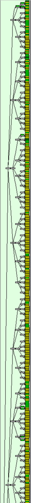
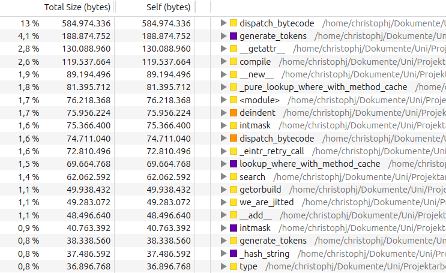
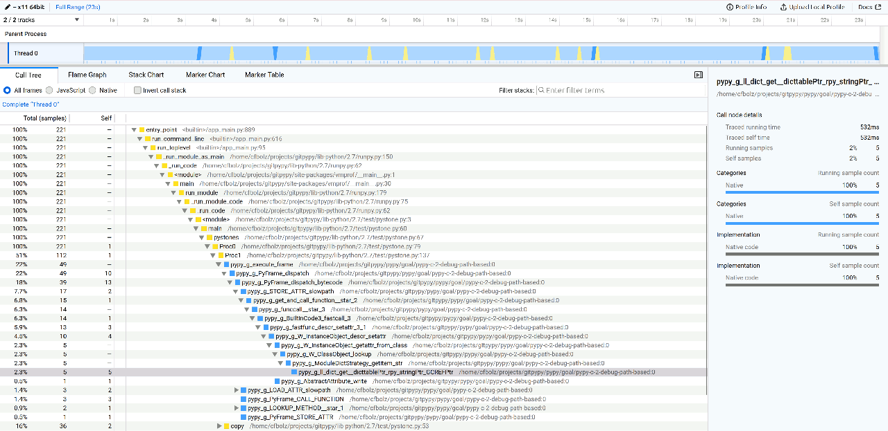

Load and store forwarding in the Toy Optimizer
This is a cross-post from Max Bernstein from his blog where he writes about programming languages, compilers, optimizations, virtual machines.
A long, long time ago (two years!) CF Bolz-Tereick and I made a video about load/store forwarding and an accompanying GitHub Gist about load/store forwarding (also called load elimination) in the Toy Optimizer. I said I would write a blog post about it, but never found the time—it got lost amid a sea of large life changes.
It's a neat idea: do an abstract interpretation over the trace, modeling the heap at compile-time, eliminating redundant loads and stores. That means it's possible to optimize traces like this:
v0 = ... v1 = load(v0, 5) v2 = store(v0, 6, 123) v3 = load(v0, 6) v4 = load(v0, 5) v5 = do_something(v1, v3, v4)
into traces like this:
v0 = ... v1 = load(v0, 5) v2 = store(v0, 6, 123) v5 = do_something(v1, 123, v1)
(where load(v0, 5) is equivalent to *(v0+5) in C syntax and store(v0, 6,
123) is equvialent to *(v0+6)=123 in C syntax)
This indicates that we were able to eliminate two redundant loads by keeping around information about previous loads and stores. Let's get to work making this possible.
The usual infrastructure
We'll start off with the usual infrastructure from the Toy Optimizer series: a very stringly-typed representation of a trace-based SSA IR and a union-find rewrite mechanism.
This means we can start writing some new optimization pass and our first test:
def optimize_load_store(bb: Block): opt_bb = Block() # TODO: copy an optimized version of bb into opt_bb return opt_bb def test_two_loads(): bb = Block() var0 = bb.getarg(0) var1 = bb.load(var0, 0) var2 = bb.load(var0, 0) bb.escape(var1) bb.escape(var2) opt_bb = optimize_load_store(bb) assert bb_to_str(opt_bb) == """\ var0 = getarg(0) var1 = load(var0, 0) var2 = escape(var1) var3 = escape(var1)"""
This test is asserting that we can remove duplicate loads. Why load twice if we can cache the result? Let's make that happen.
Caching loads
To do this, we'll model the the heap at compile-time. When I say "model", I mean that we will have an imprecise but correct abstract representation of the heap: we don't (and can't) have knowledge of every value, but we can know for sure that some addresses have certain values.
For example, if we have observed a load from object O at offset 8 v0 =
load(O, 8), we know that the SSA value v0 is at heap[(O, 8)]. That sounds
tautological, but it's not. Future loads can make use of this information.
def get_num(op: Operation, index: int=1): assert isinstance(op.arg(index), Constant) return op.arg(index).value def optimize_load_store(bb: Block): opt_bb = Block() # Stores things we know about the heap at... compile-time. # Key: an object and an offset pair acting as a heap address # Value: a previous SSA value we know exists at that address compile_time_heap: Dict[Tuple[Value, int], Value] = {} for op in bb: if op.name == "load": obj = op.arg(0) offset = get_num(op, 1) load_info = (obj, offset) previous = compile_time_heap.get(load_info) if previous is not None: op.make_equal_to(previous) continue compile_time_heap[load_info] = op opt_bb.append(op) return opt_bb
This pass records information about loads and uses the result of a previous cached load operation if available. We treat the pair of (SSA value, offset) as an address into our abstract heap.
That's great! If you run our simple test, it should now pass. But what happens if we store into that address before the second load? Oops...
def test_store_to_same_object_offset_invalidates_load(): bb = Block() var0 = bb.getarg(0) var1 = bb.load(var0, 0) var2 = bb.store(var0, 0, 5) var3 = bb.load(var0, 0) bb.escape(var1) bb.escape(var3) opt_bb = optimize_load_store(bb) assert bb_to_str(opt_bb) == """\ var0 = getarg(0) var1 = load(var0, 0) var2 = store(var0, 0, 5) var3 = load(var0, 0) var4 = escape(var1) var5 = escape(var3)"""
This test fails because we are incorrectly keeping around var1 in our
abstract heap. We need to get rid of it and not replace var3 with var1.
Invalidating cached loads
So it turns out we have to also model stores in order to cache loads correctly. One valid, albeit aggressive, way to do that is to throw away all the information we know at each store operation:
def optimize_load_store(bb: Block): opt_bb = Block() compile_time_heap: Dict[Tuple[Value, int], Value] = {} for op in bb: if op.name == "store": compile_time_heap.clear() elif op.name == "load": # ... opt_bb.append(op) return opt_bb
That makes our test pass—yay!—but at great cost. It means any store operation mucks up redundant loads. In our world where we frequently read from and write to objects, this is what we call a huge bummer.
For example, a store to offset 4 on some object should never interfere with a load from a different offset on the same object1. We should be able to keep our load from offset 0 cached here:
def test_store_to_same_object_different_offset_does_not_invalidate_load(): bb = Block() var0 = bb.getarg(0) var1 = bb.load(var0, 0) var2 = bb.store(var0, 4, 5) var3 = bb.load(var0, 0) bb.escape(var1) bb.escape(var3) opt_bb = optimize_load_store(bb) assert bb_to_str(opt_bb) == """\ var0 = getarg(0) var1 = load(var0, 0) var2 = store(var0, 4, 5) var3 = escape(var1) var4 = escape(var1)"""
We could try instead checking if our specific (object, offset) pair is in the heap and only removing cached information about that offset and that object. That would definitely help!
def optimize_load_store(bb: Block): opt_bb = Block() compile_time_heap: Dict[Tuple[Value, int], Value] = {} for op in bb: if op.name == "store": load_info = (op.arg(0), get_num(op, 1)) if load_info in compile_time_heap: del compile_time_heap[load_info] elif op.name == "load": # ... opt_bb.append(op) return opt_bb
It makes our test pass, too, which is great news.
Unfortunately, this runs into problems due to aliasing: it's entirely possible
that our compile-time heap could contain a pair (v0, 0) and a pair (v1, 0) where v0
and v1 are the same object (but not known to the optimizer). Then we might
run into a situation where we incorrectly cache loads because the optimizer
doesn't know our abstract addresses (v0, 0) and (v1, 0) are actually the
same pointer at run-time.
This means that we are breaking abstract interpretation rules: our abstract interpreter has to correctly model all possible outcomes at run-time. This means to me that we should instead pick some tactic in-between clearing all information (correct but over-eager) and clearing only exact matches of object+offset (incorrect).
The term that will help us here is called an alias class. It is a name for a way to efficiently partition objects in your abstract heap into completely disjoint sets. Writes to any object in one class never affect objects in another class.
Our very scrappy alias classes will be just based on the offset: each offset is a different alias class. If we write to any object at offset K, we have to invalidate all of our compile-time offset K knowledge—even if it's for another object. This is a nice middle ground, and it's possible because our (made up) object system guarantees that distinct objects do not overlap, and also that we are not writing out-of-bounds.2
So let's remove all of the entries from compile_time_heap where the offset
matches the offset in the current store:
def optimize_load_store(bb: Block): opt_bb = Block() compile_time_heap: Dict[Tuple[Value, int], Value] = {} for op in bb: if op.name == "store": offset = get_num(op, 1) compile_time_heap = { load_info: value for load_info, value in compile_time_heap.items() if load_info[1] != offset } elif op.name == "load": # ... opt_bb.append(op) return opt_bb
Great! Now our test passes.
This concludes the load optimization section of the post. We have modeled enough of loads and stores that we can eliminate redundant loads. Very cool. But we can go further.
Caching stores
Stores don't just invalidate information. They also give us new information!
Any time we see an operation of the form v1 = store(v0, 8, 5) we also learn
that load(v0, 8) == 5! Until it gets invalidated, anyway.
For example, in this test, we can eliminate the load from var0 at offset 0:
def test_load_after_store_removed(): bb = Block() var0 = bb.getarg(0) bb.store(var0, 0, 5) var1 = bb.load(var0, 0) var2 = bb.load(var0, 1) bb.escape(var1) bb.escape(var2) opt_bb = optimize_load_store(bb) assert bb_to_str(opt_bb) == """\ var0 = getarg(0) var1 = store(var0, 0, 5) var2 = load(var0, 1) var3 = escape(5) var4 = escape(var2)"""
Making that work is thankfully not very hard; we need only add that new information to the compile-time heap after removing all the potentially-aliased info:
def optimize_load_store(bb: Block): opt_bb = Block() compile_time_heap: Dict[Tuple[Value, int], Value] = {} for op in bb: if op.name == "store": offset = get_num(op, 1) compile_time_heap = # ... as before ... obj = op.arg(0) new_value = op.arg(2) compile_time_heap[(obj, offset)] = new_value # NEW! elif op.name == "load": # ... opt_bb.append(op) return opt_bb
This makes the test pass. It makes another test fail, but only because—oops—we now know more. You can delete the old test because the new test supersedes it.
Now, note that we are not removing the store. This is because we have nothing
in our optimizer that keeps track of what might have observed the side-effects
of the store. What if the object got escaped? Or someone did a load later on?
We would only be able to remove the store (continue) if we could guarantee it
was not observable.
In our current framework, this only happens in one case: someone is doing a store of the exact same value that already exists in our compile-time heap. That is, either the same constant, or the same SSA value. If we see this, then we can completely skip the second store instruction.
Here's a test case for that, where we have gained information from the load instruction that we can then use to get rid of the store instruction:
def test_load_then_store(): bb = Block() arg1 = bb.getarg(0) var1 = bb.load(arg1, 0) bb.store(arg1, 0, var1) bb.escape(var1) opt_bb = optimize_load_store(bb) assert bb_to_str(opt_bb) == """\ var0 = getarg(0) var1 = load(var0, 0) var2 = escape(var1)"""
Let's make it pass. To do that, first we'll make an equality function that works for both constants and operations. Constants are equal if their values are equal, and operations are equal if they are the identical (by address/pointer) operation.
def eq_value(left: Value|None, right: Value) -> bool: if isinstance(left, Constant) and isinstance(right, Constant): return left.value == right.value return left is right
This is a partial equality: if two operations are not equal under eq_value,
it doesn't mean that they are different, only that we don't know that they are
the same.
Then, after that, we need only check if the current value in the compile-time
heap is the same as the value being stored in. If it is, wonderful. No need to
store. continue and don't append the operation to opt_bb:
def optimize_load_store(bb: Block): opt_bb = Block() compile_time_heap: Dict[Tuple[Value, int], Value] = {} for op in bb: if op.name == "store": obj = op.arg(0) offset = get_num(op, 1) store_info = (obj, offset) current_value = compile_time_heap.get(store_info) new_value = op.arg(2) if eq_value(current_value, new_value): # NEW! continue compile_time_heap = # ... as before ... # ... elif op.name == "load": load_info = (op.arg(0), get_num(op, 1)) if load_info in compile_time_heap: op.make_equal_to(compile_time_heap[load_info]) continue compile_time_heap[load_info] = op opt_bb.append(op) return opt_bb
This makes our load-then-store pass and it also makes other tests pass too, like eliminating a store after another store!
def test_store_after_store(): bb = Block() arg1 = bb.getarg(0) bb.store(arg1, 0, 5) bb.store(arg1, 0, 5) opt_bb = optimize_load_store(bb) assert bb_to_str(opt_bb) == """\ var0 = getarg(0) var1 = store(var0, 0, 5)"""
Unfortunately, this only works if the values—constants or SSA values—are known to be the same. If we store different values, we can't optimize. In the live stream, we left this an exercise for the viewer:
@pytest.mark.xfail def test_exercise_for_the_reader(): bb = Block() arg0 = bb.getarg(0) var0 = bb.store(arg0, 0, 5) var1 = bb.store(arg0, 0, 7) var2 = bb.load(arg0, 0) bb.escape(var2) opt_bb = optimize_load_store(bb) assert bb_to_str(opt_bb) == """\ var0 = getarg(0) var1 = store(var0, 0, 7) var2 = escape(7)"""
We would only be able to optimize this away if we had some notion of a store being dead. In this case, that is a store in which the value is never read before being overwritten.
Removing dead stores
TODO, I suppose. I have not gotten this far yet. If I get around to it, I will come back and update the post.
In the real world
This small optimization pass may seem silly or fiddly—when would we ever see something like this in a real IR?—but it's pretty useful. Here's the Ruby code that got me thinking about it again some years later for ZJIT:
class C def initialize @a = 1 @b = 2 @c = 3 end end
CRuby has a shape system and ZJIT makes use of it, so we end up optimizing this code (if it's monomorphic) into a series of shape checks and stores. The HIR might end up looking something like the mess below, where I've annotated the shape guards (can be thought of as loads) and stores with asterisks:
fn initialize@tmp/init.rb:3: # ... bb2(v6:BasicObject): v10:Fixnum[1] = Const Value(1) v31:HeapBasicObject = GuardType v6, HeapBasicObject * v32:HeapBasicObject = GuardShape v31, 0x400000 * StoreField v32, :@a@0x10, v10 WriteBarrier v32, v10 v35:CShape[0x40008e] = Const CShape(0x40008e) * StoreField v32, :_shape_id@0x4, v35 v16:Fixnum[2] = Const Value(2) v37:HeapBasicObject = GuardType v6, HeapBasicObject * v38:HeapBasicObject = GuardShape v37, 0x40008e * StoreField v38, :@b@0x18, v16 WriteBarrier v38, v16 v41:CShape[0x40008f] = Const CShape(0x40008f) * StoreField v38, :_shape_id@0x4, v41 v22:Fixnum[3] = Const Value(3) v43:HeapBasicObject = GuardType v6, HeapBasicObject * v44:HeapBasicObject = GuardShape v43, 0x40008f * StoreField v44, :@c@0x20, v22 WriteBarrier v44, v22 v47:CShape[0x400090] = Const CShape(0x400090) * StoreField v44, :_shape_id@0x4, v47 CheckInterrupts Return v22
If we had store-load forwarding in ZJIT, we could get rid of the intermediate
shape guards; they would know the shape from the previous StoreField
instruction. If we had dead store elimination, we could get rid of the
intermediate shape writes; they are never read. (And the repeated type guards
to check if it's a heap object still are just silly and need to get removed
eventually.)
This is on the roadmap and will make object initialization even faster than it is right now.
Wrapping up
Thanks for reading the text version of the video that CF and I made a while back. Now you know how to do load/store elimination on traces.
I think this does not need too much extra work to get it going on full CFGs; a block is pretty much the same as a trace, so you can do a block-local version without much fuss. If you want to go global, you need dominator information and gen-kill sets.
Maybe I will touch on this in a future post...
Thank you
Thank you to CF, who walked me through this live on a stream two years ago! This blog post wouldn't be possible without you.
-
In this toy optimizer example, we are assuming that all reads and writes are the same size and different offsets don't overlap at all. This is often the case for managed runtimes, where object fields are pointer-sized and all reads/writes are pointed aligned. ↩
-
We could do better. If we had type information, we could also use that to make alias classes. Writes to a List will never overlap with writes to a Map, for example. This requires your compiler to have strict aliasing—if you can freely cast between types, as in C, then this tactic goes out the window.
This is called Type-based alias analysis (PDF). ↩
PyPy v7.3.20 release
PyPy v7.3.20: release of python 2.7, 3.11
The PyPy team is proud to release version 7.3.20 of PyPy after the previous
release on Feb 26, 2025. The release fixes some subtle bugs in ctypes and
OrderedDict and makes PyPy3.11 compatible with an upcoming release of
Cython.
The release includes two different interpreters:
PyPy2.7, which is an interpreter supporting the syntax and the features of Python 2.7 including the stdlib for CPython 2.7.18+ (the
+is for backported security updates)PyPy3.11, which is an interpreter supporting the syntax and the features of Python 3.11, including the stdlib for CPython 3.11.13.
The interpreters are based on much the same codebase, thus the double release. This is a micro release, all APIs are compatible with the other 7.3 releases.
We recommend updating. You can find links to download the releases here:
We would like to thank our donors for the continued support of the PyPy project. If PyPy is not quite good enough for your needs, we are available for direct consulting work. If PyPy is helping you out, we would love to hear about it and encourage submissions to our blog via a pull request to https://github.com/pypy/pypy.org
We would also like to thank our contributors and encourage new people to join the project. PyPy has many layers and we need help with all of them: bug fixes, PyPy and RPython documentation improvements, or general help with making RPython's JIT even better.
If you are a python library maintainer and use C-extensions, please consider making a HPy / CFFI / cppyy version of your library that would be performant on PyPy. In any case, cibuildwheel supports building wheels for PyPy.
What is PyPy?
PyPy is a Python interpreter, a drop-in replacement for CPython It's fast (PyPy and CPython performance comparison) due to its integrated tracing JIT compiler.
We also welcome developers of other dynamic languages to see what RPython can do for them.
We provide binary builds for:
x86 machines on most common operating systems (Linux 32/64 bits, Mac OS 64 bits, Windows 64 bits)
64-bit ARM machines running Linux (
aarch64) and macos (macos_arm64).
PyPy supports Windows 32-bit, Linux PPC64 big- and little-endian, Linux ARM 32 bit, RISC-V RV64IMAFD Linux, and s390x Linux but does not release binaries. Please reach out to us if you wish to sponsor binary releases for those platforms. Downstream packagers provide binary builds for debian, Fedora, conda, OpenBSD, FreeBSD, Gentoo, and more.
What else is new?
For more information about the 7.3.20 release, see the full changelog.
Please update, and continue to help us make pypy better.
Cheers, The PyPy Team
How fast can the RPython GC allocate?
While working on a paper about allocation profiling in VMProf I got curious about how quickly the RPython GC can allocate an object. I wrote a small RPython benchmark program to get an idea of the order of magnitude.
The basic idea is to just allocate an instance in a tight loop:
class A(object): pass def run(loops): # preliminary idea, see below for i in range(loops): a = A() a.i = i
The RPython type inference will find out that instances of A have a single
i field, which is an integer. In addition to that field, every RPython object
needs one word of GC meta-information. Therefore one instance of A needs 16
bytes on a 64-bit architecture.
However, measuring like this is not good enough, because the RPython static optimizer would remove the allocation since the object isn't used. But we can confuse the escape analysis sufficiently by always keeping two instances alive at the same time:
class A(object): pass def run(loops): a = prev = None for i in range(loops): prev = a a = A() a.i = i print(prev, a) # print the instances at the end
(I confirmed that the allocation isn't being removed by looking at the C code that the RPython compiler generates from this.)
This is doing a little bit more work than needed, because of the a.i = i
instance attribute write. We can also (optionally) leave the field
uninitialized.
def run(initialize_field, loops): t1 = time.time() if initialize_field: a = prev = None for i in range(loops): prev = a a = A() a.i = i print(prev, a) # make sure always two objects are alive else: a = prev = None for i in range(loops): prev = a a = A() print(prev, a) t2 = time.time() print(t2 - t1, 's') object_size_in_words = 2 # GC header, one integer field mem = loops * 8 * object_size_in_words / 1024.0 / 1024.0 / 1024.0 print(mem, 'GB') print(mem / (t2 - t1), 'GB/s')
Then we need to add some RPython scaffolding:
def main(argv): loops = int(argv[1]) with_init = bool(int(argv[2])) if with_init: print("with initialization") else: print("without initialization") run(with_init, loops) return 0 def target(*args): return main
To build a binary:
pypy rpython/bin/rpython targetallocatealot.py
Which will turn the RPython code into C code and use a C compiler to turn that into a binary, containing both our code above as well as the RPython garbage collector.
Then we can run it (all results again from my AMD Ryzen 7 PRO 7840U, running Ubuntu Linux 24.04.2):
$ ./targetallocatealot-c 1000000000 0 without initialization <A object at 0x7c71ad84cf60> <A object at 0x7c71ad84cf70> 0.433825 s 14.901161 GB 34.348322 GB/s $ ./targetallocatealot-c 1000000000 1 with initialization <A object at 0x71b41c82cf60> <A object at 0x71b41c82cf70> 0.501856 s 14.901161 GB 29.692100 GB/s
Let's compare it with the Boehm GC:
$ pypy rpython/bin/rpython --gc=boehm --output=targetallocatealot-c-boehm targetallocatealot.py ... $ ./targetallocatealot-c-boehm 1000000000 0 without initialization <A object at 0xffff8bd058a6e3af> <A object at 0xffff8bd058a6e3bf> 9.722585 s 14.901161 GB 1.532634 GB/s $ ./targetallocatealot-c-boehm 1000000000 1 with initialization <A object at 0xffff88e1132983af> <A object at 0xffff88e1132983bf> 9.684149 s 14.901161 GB 1.538717 GB/s
This is not a fair comparison, because the Boehm GC uses conservative stack scanning, therefore it cannot move objects, which requires much more complicated allocation.
Let's look at perf stats
We can use perf to get some statistics about the executions:
$ perf stat -e cache-references,cache-misses,cycles,instructions,branches,faults,migrations ./targetallocatealot-c 10000000000 0 without initialization <A object at 0x7aa260e35980> <A object at 0x7aa260e35990> 4.301442 s 149.011612 GB 34.642245 GB/s Performance counter stats for './targetallocatealot-c 10000000000 0': 7,244,117,828 cache-references 23,446,661 cache-misses # 0.32% of all cache refs 21,074,240,395 cycles 110,116,790,943 instructions # 5.23 insn per cycle 20,024,347,488 branches 1,287 faults 24 migrations 4.303071693 seconds time elapsed 4.297557000 seconds user 0.003998000 seconds sys $ perf stat -e cache-references,cache-misses,cycles,instructions,branches,faults,migrations ./targetallocatealot-c 10000000000 1 with initialization <A object at 0x77ceb0235980> <A object at 0x77ceb0235990> 5.016772 s 149.011612 GB 29.702688 GB/s Performance counter stats for './targetallocatealot-c 10000000000 1': 7,571,461,470 cache-references 241,915,266 cache-misses # 3.20% of all cache refs 24,503,497,532 cycles 130,126,387,460 instructions # 5.31 insn per cycle 20,026,280,693 branches 1,285 faults 21 migrations 5.019444749 seconds time elapsed 5.012924000 seconds user 0.005999000 seconds sys
This is pretty cool, we can run this loop with >5 instructions per cycle. Every
allocation takes 110116790943 / 10000000000 ≈ 11 instructions and
21074240395 / 10000000000 ≈ 2.1 cycles, including the loop around it.
How often does the GC run?
The RPython GC queries the L2 cache size to determine the size of the nursery.
We can find out what it is by turning on PYPYLOG, selecting the proper logging
categories, and printing to stdout via :-:
$ PYPYLOG=gc-set-nursery-size,gc-hardware:- ./targetallocatealot-c 1 1 [f3e6970465723] {gc-set-nursery-size nursery size: 270336 [f3e69704758f3] gc-set-nursery-size} [f3e697047b9a1] {gc-hardware L2cache = 1048576 [f3e69705ced19] gc-hardware} [f3e69705d11b5] {gc-hardware memtotal = 32274210816.000000 [f3e69705f4948] gc-hardware} [f3e6970615f78] {gc-set-nursery-size nursery size: 4194304 [f3e697061ecc0] gc-set-nursery-size} with initialization NULL <A object at 0x7fa7b1434020> 0.000008 s 0.000000 GB 0.001894 GB/s
So the nursery is 4 MiB. This means that when we allocate 14.9 GiB the GC needs to perform 10000000000 * 16 / 4194304 ≈ 38146 minor collections. Let's confirm that:
$ PYPYLOG=gc-minor:out ./targetallocatealot-c 10000000000 1 with initialization w<A object at 0x7991e3835980> <A object at 0x7991e3835990> 5.315511 s 149.011612 GB 28.033356 GB/s $ head out [f3ee482f4cd97] {gc-minor [f3ee482f53874] {gc-minor-walkroots [f3ee482f54117] gc-minor-walkroots} minor collect, total memory used: 0 number of pinned objects: 0 total size of surviving objects: 0 time taken: 0.000029 [f3ee482f67b7e] gc-minor} [f3ee4838097c5] {gc-minor [f3ee48380c945] {gc-minor-walkroots $ grep "{gc-minor-walkroots" out | wc -l 38147
Each minor collection is very quick, because a minor collection is O(surviving objects), and in this program only one object survive each time (the other instance is in the process of being allocated). Also, the GC root shadow stack is only one entry, so walking that is super quick as well. The time the minor collections take is logged to the out file:
$ grep "time taken" out | tail time taken: 0.000002 time taken: 0.000002 time taken: 0.000002 time taken: 0.000002 time taken: 0.000002 time taken: 0.000002 time taken: 0.000002 time taken: 0.000003 time taken: 0.000002 time taken: 0.000002 $ grep "time taken" out | grep -o "0.*" | numsum 0.0988160000000011
(This number is super approximate due to float formatting rounding.)
that means that 0.0988160000000011 / 5.315511 ≈ 2% of the time is spent in the GC.
What does the generated machine code look like?
The allocation fast path of the RPython GC is a simple bump pointer, in Python pseudo-code it would look roughly like this:
result = gc.nursery_free # Move nursery_free pointer forward by totalsize gc.nursery_free = result + totalsize # Check if this allocation would exceed the nursery if gc.nursery_free > gc.nursery_top: # If it does => collect the nursery and al result = collect_and_reserve(totalsize) result.hdr = <GC flags and type id of A>
So we can disassemble the compiled binary targetallocatealot-c and try to
find the equivalent logic in machine code. I'm super bad at reading machine
code, but I tried to annotate what I think is the core loop (the version
without initializing the i field) below:
... cb68: mov %rbx,%rdi cb6b: mov %rdx,%rbx # initialize object header of object allocated in previous iteration cb6e: movq $0x4c8,(%rbx) # loop termination check cb75: cmp %rbp,%r12 cb78: je ccb8 # load nursery_free cb7e: mov 0x33c13(%rip),%rdx # increment loop counter cb85: add $0x1,%rbp # add 16 (size of object) to nursery_free cb89: lea 0x10(%rdx),%rax # compare nursery_top with new nursery_free cb8d: cmp %rax,0x33c24(%rip) # store new nursery_free cb94: mov %rax,0x33bfd(%rip) # if new nursery_free exceeds nursery_top, fall through to slow path, if not, start at top cb9b: jae cb68 # slow path from here on: # save live object from last iteration to GC shadow stack cb9d: mov %rbx,-0x8(%rcx) cba1: mov %r13,%rdi cba4: mov $0x10,%esi # do minor collection cba9: call 20800 <pypy_g_IncrementalMiniMarkGC_collect_and_reserve> ...
Running the benchmark as regular Python code
So far we ran this code as RPython, i.e. type inference is performed and the program is translated to a C binary. We can also run it on top of PyPy, as a regular Python3 program. However, an instance of a user-defined class in regular Python when run on PyPy is actually a much larger object, due to dynamic typing. It's at least 7 words, which is 56 bytes.
However, we can simply use int objects instead. Integers are allocated on the
heap and consist of two words, one for the GC and one with the
machine-word-sized integer value, if the integer fits into a signed 64-bit
representation (otherwise a less compact different representation is used,
which can represent arbitrarily large integers).
Therefore, we can simply use this kind of code:
import sys, time def run(loops): t1 = time.time() a = prev = None for i in range(loops): prev = a a = i print(prev, a) # make sure always two objects are alive t2 = time.time() object_size_in_words = 2 # GC header, one integer field mem = loops * 28 / 1024.0 / 1024.0 / 1024.0 print(mem, 'GB') print(mem / (t2 - t1), 'GB/s') def main(argv): loops = int(argv[1]) run(loops) return 0 if __name__ == '__main__': sys.exit(main(sys.argv))
In this case we can't really leave the value uninitialized though.
We can run this both with and without the JIT:
$ pypy3 allocatealot.py 1000000000 999999998 999999999 14.901161193847656 GB 17.857494904899553 GB/s $ pypy3 --jit off allocatealot.py 1000000000 999999998 999999999 14.901161193847656 GB 0.8275382375297171 GB/s
This is obviously much less efficient than the C code, the PyPy JIT generates much less efficient machine code than GCC. Still, "only" twice as slow is kind of cool anyway.
(Running it with CPython doesn't really make sense for this measurements, since
CPython ints are bigger – sys.getsizeof(5) reports 28 bytes.)
The machine code that the JIT generates
Unfortunately it's a bit of a journey to show the machine code that PyPy's JIT generates for this. First we need to run with all jit logging categories:
$ PYPYLOG=jit:out pypy3 allocatealot.py 1000000000
Then we can read the log file to find the trace IR for the loop under the logging category jit-log-opt:
+532: label(p0, p1, p6, p9, p11, i34, p13, p19, p21, p23, p25, p29, p31, i44, i35, descr=TargetToken(137358545605472)) debug_merge_point(0, 0, 'run;/home/cfbolz/projects/gitpypy/allocatealot.py:6-9~#24 FOR_ITER') # are we at the end of the loop +552: i45 = int_lt(i44, i35) +555: guard_true(i45, descr=<Guard0x7ced4756a160>) [p0, p6, p9, p11, p13, p19, p21, p23, p25, p29, p31, p1, i44, i35, i34] +561: i47 = int_add(i44, 1) debug_merge_point(0, 0, 'run;/home/cfbolz/projects/gitpypy/allocatealot.py:6-9~#26 STORE_FAST') debug_merge_point(0, 0, 'run;/home/cfbolz/projects/gitpypy/allocatealot.py:6-10~#28 LOAD_FAST') debug_merge_point(0, 0, 'run;/home/cfbolz/projects/gitpypy/allocatealot.py:6-10~#30 STORE_FAST') debug_merge_point(0, 0, 'run;/home/cfbolz/projects/gitpypy/allocatealot.py:6-11~#32 LOAD_FAST') debug_merge_point(0, 0, 'run;/home/cfbolz/projects/gitpypy/allocatealot.py:6-11~#34 STORE_FAST') debug_merge_point(0, 0, 'run;/home/cfbolz/projects/gitpypy/allocatealot.py:6-11~#36 JUMP_ABSOLUTE') # update iterator object +565: setfield_gc(p25, i47, descr=<FieldS pypy.module.__builtin__.functional.W_IntRangeIterator.inst_current 8>) +569: guard_not_invalidated(descr=<Guard0x7ced4756a1b0>) [p0, p6, p9, p11, p19, p21, p23, p25, p29, p31, p1, i44, i34] # check for signals +569: i49 = getfield_raw_i(137358624889824, descr=<FieldS pypysig_long_struct_inner.c_value 0>) +582: i51 = int_lt(i49, 0) +586: guard_false(i51, descr=<Guard0x7ced4754db78>) [p0, p6, p9, p11, p19, p21, p23, p25, p29, p31, p1, i44, i34] debug_merge_point(0, 0, 'run;/home/cfbolz/projects/gitpypy/allocatealot.py:6-9~#24 FOR_ITER') # allocate the integer (allocation sunk to the end of the trace) +592: p52 = new_with_vtable(descr=<SizeDescr 16>) +630: setfield_gc(p52, i34, descr=<FieldS pypy.objspace.std.intobject.W_IntObject.inst_intval 8 pure>) +634: jump(p0, p1, p6, p9, p11, i44, p52, p19, p21, p23, p25, p29, p31, i47, i35, descr=TargetToken(137358545605472))
To find the machine code address of the trace, we need to search for this line:
Loop 1 (run;/home/cfbolz/projects/gitpypy/allocatealot.py:6-9~#24 FOR_ITER) \ has address 0x7ced473ffa0b to 0x7ced473ffbb0 (bootstrap 0x7ced473ff980)
Then we can use a script in the PyPy repo to disassemble the generated machine code:
$ pypy rpython/jit/backend/tool/viewcode.py out
This will dump all the machine code to stdout, and open a pygame-based graphviz cfg. In there we can search for the address and see this:

Here's an annotated version with what I think this code does:
# increment the profile counter 7ced473ffb40: 48 ff 04 25 20 9e 33 incq 0x38339e20 7ced473ffb47: 38 # check whether the loop is done 7ced473ffb48: 4c 39 fe cmp %r15,%rsi 7ced473ffb4b: 0f 8d 76 01 00 00 jge 0x7ced473ffcc7 # increment iteration variable 7ced473ffb51: 4c 8d 66 01 lea 0x1(%rsi),%r12 # update iterator object 7ced473ffb55: 4d 89 61 08 mov %r12,0x8(%r9) # check for ctrl-c/thread switch 7ced473ffb59: 49 bb e0 1b 0b 4c ed movabs $0x7ced4c0b1be0,%r11 7ced473ffb60: 7c 00 00 7ced473ffb63: 49 8b 0b mov (%r11),%rcx 7ced473ffb66: 48 83 f9 00 cmp $0x0,%rcx 7ced473ffb6a: 0f 8c 8f 01 00 00 jl 0x7ced473ffcff # load nursery_free pointer 7ced473ffb70: 49 8b 8b d8 30 f6 fe mov -0x109cf28(%r11),%rcx # add size (16) 7ced473ffb77: 48 8d 51 10 lea 0x10(%rcx),%rdx # compare against nursery top 7ced473ffb7b: 49 3b 93 f8 30 f6 fe cmp -0x109cf08(%r11),%rdx # jump to slow path if nursery is full 7ced473ffb82: 0f 87 41 00 00 00 ja 0x7ced473ffbc9 # store new value of nursery free 7ced473ffb88: 49 89 93 d8 30 f6 fe mov %rdx,-0x109cf28(%r11) # initialize GC header 7ced473ffb8f: 48 c7 01 30 11 00 00 movq $0x1130,(%rcx) # initialize integer field 7ced473ffb96: 48 89 41 08 mov %rax,0x8(%rcx) 7ced473ffb9a: 48 89 f0 mov %rsi,%rax 7ced473ffb9d: 48 89 8d 60 01 00 00 mov %rcx,0x160(%rbp) 7ced473ffba4: 4c 89 e6 mov %r12,%rsi 7ced473ffba7: e9 94 ff ff ff jmp 0x7ced473ffb40 7ced473ffbac: 0f 1f 40 00 nopl 0x0(%rax)
Conclusion
The careful design of the RPython GC's allocation fast path gives pretty good allocation rates. This technique isn't really new, it's a pretty typical way to design a GC. Apart from that, my main conclusion would be that computers are fast or something? Indeed, when we ran the same code on my colleague's two-year-old AMD, we got quite a bit worse results, so a lot of the speed seems to be due to the hard work of CPU architects.
Doing the Prospero-Challenge in RPython
Recently I had a lot of fun playing with the Prospero Challenge by Matt Keeter. The challenge is to render a 1024x1024 image of a quote from The Tempest by Shakespeare. The input is a mathematical formula with 7866 operations, which is evaluated once per pixel.
What made the challenge particularly enticing for me personally was the fact that the formula is basically a trace in SSA-form – a linear sequence of operations, where every variable is assigned exactly once. The challenge is to evaluate the formula as fast as possible. I tried a number of ideas how to speed up execution and will talk about them in this somewhat meandering post. Most of it follows Matt's implementation Fidget very closely. There are two points of difference:
- I tried to add more peephole optimizations, but they didn't end up helping much.
- I implemented a "demanded information" optimization that removes a lot of operations by only keeping the sign of the result. This optimization ended up being useful.
Most of the prototyping in this post was done in RPython (a statically typable subset of Python2, that can be compiled to C), but I later rewrote the program in C to get better performance. All the code can be found on Github.
Input program
The input program is a sequence of operations, like this:
_0 const 2.95 _1 var-x _2 const 8.13008 _3 mul _1 _2 _4 add _0 _3 _5 const 3.675 _6 add _5 _3 _7 neg _6 _8 max _4 _7 ...
The first column is the name of the result variable, the second column is the
operation, and the rest are the arguments to the operation. var-x is a
special operation that returns the x-coordinate of the pixel being rendered,
and equivalently for var-y the y-coordinate. The sign of the result gives the
color of the pixel, the absolute value is not important.
A baseline interpreter
To run the program, I first parse them and replace the register names with indexes, to avoid any dictionary lookups at runtime. Then I implemented a simple interpreter for the SSA-form input program. The interpreter is a simple register machine, where every operation is executed in order. The result of the operation is stored into a list of results, and the next operation is executed. This was the slow baseline implementation of the interpreter but it's very useful to compare against the optimized versions.
This is roughly what the code looks like
class DirectFrame(object): def __init__(self, program): self.program = program self.next = None def run_floats(self, x, y, z): self.setxyz(x, y, z) return self.run() def setxyz(self, x, y, z): self.x = x self.y = y self.z = z def run(self): program = self.program num_ops = program.num_operations() floatvalues = [0.0] * num_ops for op in range(num_ops): func, arg0, arg1 = program.get_func_and_args(op) if func == OPS.const: floatvalues[op] = program.consts[arg0] continue farg0 = floatvalues[arg0] farg1 = floatvalues[arg1] if func == OPS.var_x: res = self.x elif func == OPS.var_y: res = self.y elif func == OPS.var_z: res = self.z elif func == OPS.add: res = self.add(farg0, farg1) elif func == OPS.sub: res = self.sub(farg0, farg1) elif func == OPS.mul: res = self.mul(farg0, farg1) elif func == OPS.max: res = self.max(farg0, farg1) elif func == OPS.min: res = self.min(farg0, farg1) elif func == OPS.square: res = self.square(farg0) elif func == OPS.sqrt: res = self.sqrt(farg0) elif func == OPS.exp: res = self.exp(farg0) elif func == OPS.neg: res = self.neg(farg0) elif func == OPS.abs: res = self.abs(farg0) else: assert 0 floatvalues[op] = res return self.floatvalues[num_ops - 1] def add(self, arg0, arg1): return arg0 + arg1 def sub(self, arg0, arg1): return arg0 - arg1 def mul(self, arg0, arg1): return arg0 * arg1 def max(self, arg0, arg1): return max(arg0, arg1) def min(self, arg0, arg1): return min(arg0, arg1) def square(self, arg0): val = arg0 return val*val def sqrt(self, arg0): return math.sqrt(arg0) def exp(self, arg0): return math.exp(arg0) def neg(self, arg0): return -arg0 def abs(self, arg0): return abs(arg0)
Running the naive interpreter on the prospero image file is super slow, since it performs 7866 * 1024 * 1024 float operations, plus the interpretation overhead.
Using Quadtrees to render the picture
The approach that Matt describes in his really excellent talk is to use quadtrees: recursively subdivide the image into quadrants, and evaluate the formula in each quadrant. For every quadrant you can simplify the formula by doing a range analysis. After a few recursion steps, the formula becomes significantly smaller, often only a few hundred or a few dozen operations.
At the bottom of the recursion you either reach a square where the range analysis reveals that the sign for all pixels is determined, then you can fill in all the pixels of the quadrant. Or you can evaluate the (now much simpler) formula in the quadrant by executing it for every pixel.
This is an interesting use case of JIT compiler/optimization techniques, requiring the optimizer itself to execute really quickly since it is an essential part of the performance of the algorithm. The optimizer runs literally hundreds of times to render a single image. If the algorithm is used for 3D models it becomes even more crucial.
Writing a simple optimizer
Implementing the quadtree recursion is straightforward. Since the program has no control flow the optimizer is very simple to write. I've written a couple of blog posts on how to easily write optimizers for linear sequences of operations, and I'm using the approach described in these Toy Optimizer posts. The interval analysis is basically an abstract interpretation of the operations. The optimizer does a sequential forward pass over the input program. For every operation, the output interval is computed. The optimizer also performs optimizations based on the computed intervals, which helps in reducing the number of operations executed (I'll talk about this further down).
Here's a sketch of the Python code that does the optimization:
class Optimizer(object): def __init__(self, program): self.program = program num_operations = program.num_operations() self.resultops = ProgramBuilder(num_operations) self.intervalframe = IntervalFrame(self.program) # old index -> new index self.opreplacements = [0] * num_operations self.index = 0 def get_replacement(self, op): return self.opreplacements[op] def newop(self, func, arg0=0, arg1=0): return self.resultops.add_op(func, arg0, arg1) def newconst(self, value): const = self.resultops.add_const(value) self.intervalframe.minvalues[const] = value self.intervalframe.maxvalues[const] = value #self.seen_consts[value] = const return const def optimize(self, a, b, c, d, e, f): program = self.program self.intervalframe.setxyz(a, b, c, d, e, f) numops = program.num_operations() for index in range(numops): newop = self._optimize_op(index) self.opreplacements[index] = newop return self.opreplacements[numops - 1] def _optimize_op(self, op): program = self.program intervalframe = self.intervalframe func, arg0, arg1 = program.get_func_and_args(op) assert arg0 >= 0 assert arg1 >= 0 if func == OPS.var_x: minimum = intervalframe.minx maximum = intervalframe.maxx return self.opt_default(OPS.var_x, minimum, maximum) if func == OPS.var_y: minimum = intervalframe.miny maximum = intervalframe.maxy return self.opt_default(OPS.var_y, minimum, maximum) if func == OPS.var_z: minimum = intervalframe.minz maximum = intervalframe.maxz return self.opt_default(OPS.var_z, minimum, maximum) if func == OPS.const: const = program.consts[arg0] return self.newconst(const) arg0 = self.get_replacement(arg0) arg1 = self.get_replacement(arg1) assert arg0 >= 0 assert arg1 >= 0 arg0minimum = intervalframe.minvalues[arg0] arg0maximum = intervalframe.maxvalues[arg0] arg1minimum = intervalframe.minvalues[arg1] arg1maximum = intervalframe.maxvalues[arg1] if func == OPS.neg: return self.opt_neg(arg0, arg0minimum, arg0maximum) if func == OPS.min: return self.opt_min(arg0, arg1, arg0minimum, arg0maximum, arg1minimum, arg1maximum) ... def opt_default(self, func, minimum, maximum, arg0=0, arg1=0): self.intervalframe._set(newop, minimum, maximum) return newop def opt_neg(self, arg0, arg0minimum, arg0maximum): # peephole rules go here, see below minimum, maximum = self.intervalframe._neg(arg0minimum, arg0maximum) return self.opt_default(OPS.neg, minimum, maximum, arg0) @symmetric def opt_min(self, arg0, arg1, arg0minimum, arg0maximum, arg1minimum, arg1maximum): # peephole rules go here, see below minimum, maximum = self.intervalframe._max(arg0minimum, arg0maximum, arg1minimum, arg1maximum) return self.opt_default(OPS.max, minimum, maximum, arg0, arg1) ...
The resulting optimized traces are then simply interpreted at the bottom of the quadtree recursion. Matt talks about also generating machine code from them, but when I tried to use PyPy's JIT for that it was way too slow at producing machine code.
Testing soundness of the interval abstract domain
To make sure that my interval computation in the optimizer is correct, I implemented a hypothesis-based property based test. It checks the abstract transfer functions of the interval domain for soundness. It does so by generating random concrete input values for an operation and random intervals that surround the random concrete values, then performs the concrete operation to get the concrete output, and finally checks that the abstract transfer function applied to the input intervals gives an interval that contains the concrete output.
For example, the random test for the square operation would look like this:
from hypothesis import given, strategies, assume from pyfidget.vm import IntervalFrame, DirectFrame import math regular_floats = strategies.floats(allow_nan=False, allow_infinity=False) def make_range_and_contained_float(a, b, c): a, b, c, = sorted([a, b, c]) return a, b, c frame = DirectFrame(None) intervalframe = IntervalFrame(None) range_and_contained_float = strategies.builds(make_range_and_contained_float, regular_floats, regular_floats, regular_floats) def contains(res, rmin, rmax): if math.isnan(rmin) or math.isnan(rmax): return True return rmin <= res <= rmax @given(range_and_contained_float) def test_square(val): a, b, c = val rmin, rmax = intervalframe._square(a, c) res = frame.square(b) assert contains(res, rmin, rmax)
This test generates a random float b, and two other floats a and c such
that the interval [a, c] contains b. The test then checks that the result
of the square operation on b is contained in the interval [rmin, rmax]
returned by the abstract transfer function for the square operation.
Peephole rewrites
The only optimization that Matt does in his implementation is a peephole
optimization rule that removes min and max operations where the intervals
of the arguments don't overlap. In that case, the optimizer statically can know
which of the arguments will be the result of the operation. I implemented this
peephole optimization in my implementation as well, but I also added a few more
peephole optimizations that I thought would be useful.
class Optimizer(object): def opt_neg(self, arg0, arg0minimum, arg0maximum): # new: add peephole rule --x => x func, arg0arg0, _ = self.resultops.get_func_and_args(arg0) if func == OPS.neg: return arg0arg0 minimum, maximum = self.intervalframe._neg(arg0minimum, arg0maximum) return self.opt_default(OPS.neg, minimum, maximum, arg0) @symmetric def opt_min(self, arg0, arg1, arg0minimum, arg0maximum, arg1minimum, arg1maximum): # Matt's peephole rule if arg0maximum < arg1minimum: return arg0 # we can use the intervals to decide which argument will be returned # new one by me: min(x, x) => x if arg0 == arg1: return arg0 func, arg0arg0, arg0arg1 = self.resultops.get_func_and_args(arg0) minimum, maximum = self.intervalframe._max(arg0minimum, arg0maximum, arg1minimum, arg1maximum) return self.opt_default(OPS.max, minimum, maximum, arg0, arg1) ...
However, it turns out that all my attempts at adding other peephole
optimization rules were not very useful. Most rules never fired, and the ones
that did only had a small effect on the performance of the program. The only
peephole optimization that I found to be useful was the one that Matt describes
in his talk. Matt's min/max optimization were 96% of all rewrites that my
peephole optimizer applied for the prospero.vm input. The remaining 4% of
rewrites were (the percentages are of that 4%):
--x => x 4.65% (-x)**2 => x ** 2 0.99% min(x, x) => x 20.86% min(x, min(x, y)) => min(x, y) 52.87% max(x, x) => x 16.40% max(x, max(x, y)) => max(x, y) 4.23%
In the end it turned out that having these extra optimization rules made the total runtime of the system go up. Checking for the rewrites isn't free, and since they apply so rarely they don't pay for their own cost in terms of improved performance.
There are some further rules that I tried that never fired at all:
a * 0 => 0 a * 1 => a a * a => a ** 2 a * -1 => -a a + 0 => a a - 0 => a x - x => 0 abs(known positive number x) => x abs(known negative number x) => -x abs(-x) => abs(x) (-x) ** 2 => x ** 2
This investigation is clearly way too focused on a single program and should be re-done with a larger set of example inputs, if this were an actually serious implementation.
Demanded Information Optimization
LLVM has an static analysis pass called 'demanded bits'. It is a backwards analysis that allows you to determine which bits of a value are actually used in the final result. This information can then be used in peephole optimizations. For example, if you have an expression that computes a value, but only the last byte of that value is used in the final result, you can optimize the expression to only compute the last byte.
Here's an example. Let's say we first byte-swap a 64-bit int, and then mask off the last byte:
uint64_t byteswap_then_mask(uint64_t a) { return byteswap(a) & 0xff; }
In this case, the "demanded bits" of the byteswap(a) expression are
0b0...011111111, which inversely means that we don't care about the upper 56
bits. Therefore the whole expression can be optimized to a >> 56.
For the Prospero challenge, we can observe that for the resulting pixel values, the value of
the result is not used at all, only its sign. Essentially, every program ends
implicitly with a sign operation that returns 0.0 for negative values and
1.0 for positive values. For clarity, I will show this sign operation in
the rest of the section, even if it's not actually in the real code.
This makes it possible to simplify certain min/max operations further. Here is an example of a program, together with the intervals of the variables:
x var-x # [0.1, 1] y var-y # [-1, 1] m min x y # [-1, 1] out sign m
This program can be optimized to:
y var-y out sign m
Because that expression has the same result as the original expression: if x >
0.1, for the result of min(x, y) to be negative then y needs to be negative.
Another, more complex, example is this:
x var-x # [1, 100] y var-y # [-10, 10] z var-z # [-100, 100] m1 min x y # [-10, 10] m2 max z out # [-10, 100] out sign m2
Which can be optimized to this:
y var-y z var-z m2 max z y out sign m2
This is because the sign of min(x, y) is the same as the sign of y if x >
0, and the sign of max(z, min(x, y)) is thus the same as the sign of max(z,
y).
To implement this optimization, I do a backwards pass over the program after
the peephole optimization forward pass. For every min call I encounter, where
one of the arguments is positive, I can optimize the min call away and
replace it with the other argument. For max calls I simplify their arguments
recursively.
The code looks roughly like this:
def work_backwards(resultops, result, minvalues, maxvalues): def demand_sign_simplify(op): func, arg0, arg1 = resultops.get_func_and_args(op) if func == OPS.max: narg0 = demand_sign_simplify(arg0) if narg0 != arg0: resultops.setarg(op, 0, narg0) narg1 = demand_sign_simplify(arg1) if narg1 != arg1: resultops.setarg(op, 1, narg1) if func == OPS.min: if minvalues[arg0] > 0.0: return demand_sign_simplify(arg1) if minvalues[arg1] > 0.0: return demand_sign_simplify(arg0) narg0 = demand_sign_simplify(arg0) if narg0 != arg0: resultops.setarg(op, 1, narg0) narg1 = demand_sign_simplify(arg1) if narg1 != arg1: resultops.setarg(op, 1, narg1) return op return demand_sign_simplify(result)
In my experiment, this optimization lets me remove 25% of all operations in prospero, at the various levels of my octree. I'll briefly look at performance results further down.
Further ideas about the demanded sign simplification
There is another idea how to short-circuit the evaluation of expressions that I tried briefly but didn't pursue to the end. Let's go back to the first example of the previous subsection, but with different intervals:
x var-x # [-1, 1] y var-y # [-1, 1] m min x y # [-1, 1] out sign m
Now we can't use the "demanded sign" trick in the optimizer, because neither
x nor y are known positive. However, during execution of the program, if
x turns out to be negative we can end the execution of this trace
immediately, since we know that the result must be negative.
So I experimented with adding return_early_if_neg flags to all operations
with this property. The interpreter then checks whether the flag is set on an
operation and if the result is negative, it stops the execution of the program
early:
x var-x[return_early_if_neg] y var-y[return_early_if_neg] m min x y out sign m
This looked pretty promising, but it's also a trade-off because the cost of checking the flag and the value isn't zero. Here's a sketch to the change in the interpreter:
class DirectFrame(object): ... def run(self): program = self.program num_ops = program.num_operations() floatvalues = [0.0] * num_ops for op in range(num_ops): ... if func == OPS.var_x: res = self.x ... else: assert 0 if program.get_flags(op) & OPS.should_return_if_neg and res < 0.0: return res floatvalues[op] = res return self.floatvalues[num_ops - 1]
I implemented this in the RPython version, but didn't end up porting it to C, because it interferes with SIMD.
Dead code elimination
Matt performs dead code elimination in his implementation by doing a single backwards pass over the program. This is a very simple and effective optimization, and I implemented it in my implementation as well. The dead code elimination pass is very simple: It starts by marking the result operation as used. Then it goes backwards over the program. If the current operation is used, its arguments are marked as used as well. Afterwards, all the operations that are not marked as used are removed from the program. The PyPy JIT actually performs dead code elimination on traces in exactly the same way (and I don't think we ever explained how this works on the blog), so I thought it was worth mentioning.
Matt also performs register allocation as part of the backwards pass, but I didn't implement it because I wasn't too interested in that aspect.
Random testing of the optimizer
To make sure I didn't break anything in the optimizer, I implemented a
test that generates random input programs and checks that the output of the
optimizer is equivalent to the input program. The test generates random
operations, random intervals for the operations and a random input value within
that interval. It then runs the optimizer on the input program and checks that
the output program has the same result as the input program. This is again
implemented with hypothesis. Hypothesis' test case minimization feature is
super useful for finding optimizer bugs. It's just not fun to analyze a problem
on a many-thousand-operation input file, but Hypothesis often generated reduced
test cases that were only a few operations long.
Visualizing programs
It's actually surprisingly annoying to visualize prospero.vm well, because
it's quite a bit too large to just feed it into Graphviz. I made the problem
slightly easier by grouping several operations together, where only the first
operation in a group is used as the argument for more than one operation
further in the program. This made it slightly more manageable for Graphviz. But
it still wasn't a big enough improvement to be able to visualize all of
prospero.vm in its unoptimized form at the top of the octree.
Here's a visualization of the optimized prospero.vm at one of the octree
levels:
The result is on top, every node points to its arguments. The min and max
operations form a kind of "spine" of the expression tree, because they are
unions and intersection in the constructive solid geometry sense.
I also wrote a function to visualize the octree recursion itself, the output looks like this:


Green nodes are where the interval analysis determined that the output must be entirely outside the shape. Yellow nodes are where the octree recursion bottomed out.
C implementation
To achieve even faster performance, I decided to rewrite the implementation in C. While RPython is great for prototyping, it can be challenging to control low-level aspects of the code. The rewrite in C allowed me to experiment with several techniques I had been curious about:
-
musttailoptimization for the interpreter. - SIMD (Single Instruction, Multiple Data): Using Clang's
ext_vector_type, I process eight pixels at once using AVX (or some other SIMD magic that I don't properly understand). - Efficient struct packing: I packed the operations struct into just 8 bytes by limiting the maximum number of operations to 65,536, with the idea of making the optimizer faster.
I didn't rigorously study the performance impact of each of these techniques individually, so it's possible that some of them might not have contributed significantly. However, the rewrite was a fun exercise for me to explore these techniques. The code can be found here.
Testing the C implementation
At various points I had bugs in the C implementation, leading to a fun glitchy version of prospero:

To find these bugs, I used the same random testing approach as in the
RPython version. I generated random input programs as strings in Python and
checked that the output of the C implementation was equivalent to the output of
the RPython implementation (simply by calling out to the shell and reading the
generated image, then comparing pixels). This helped ensure that the C
implementation was
correct and didn't introduce any bugs. It was surprisingly tricky to get this
right, for reasons that I didn't expect. At lot of them are related to the fact
that in C I used float and Python uses double for its (Python) float
type. This made the random tester find weird floating point corner cases where
rounding behaviour between the widths was different.
I solved those by using double in C when running the random tests by means of
an IFDEF.
It's super fun to watch the random program generator produce random images, here are a few:
Performance
Some very rough performance results on my laptop (an AMD Ryzen 7 PRO 7840U with
32 GiB RAM running Ubuntu 24.04), comparing the RPython version, the C version
(with and without demanded info), and Fidget (in vm mode, its JIT made things
worse for me), both for 1024x1024 and 4096x4096 images:
| Implementation | 1024x1024 | 4096x4096 |
|---|---|---|
| RPython | 26.8ms | 75.0ms |
| C (no demanded info) | 24.5ms | 45.0ms |
| C (demanded info) | 18.0ms | 37.0ms |
| Fidget | 10.8ms | 57.8ms |
The demanded info seem to help quite a bit, which was nice to see.
Conclusion
That's it! I had lots of fun with the challenge and have a whole bunch of other ideas I want to try out, thanks Matt for this interesting puzzle.
PyPy v7.3.19 release
PyPy v7.3.19: release of python 2.7, 3.10 and 3.11 beta
The PyPy team is proud to release version 7.3.19 of PyPy. This is primarily a bug-fix release fixing JIT-related problems and follows quickly on the heels of the previous release on Feb 6, 2025.
This release includes a python 3.11 interpreter. There were bugs in the first beta that could prevent its wider use, so we are continuing to call this release "beta". In the next release we will drop 3.10 and remove the "beta" label.
The release includes three different interpreters:
PyPy2.7, which is an interpreter supporting the syntax and the features of Python 2.7 including the stdlib for CPython 2.7.18+ (the
+is for backported security updates)PyPy3.10, which is an interpreter supporting the syntax and the features of Python 3.10, including the stdlib for CPython 3.10.16.
PyPy3.11, which is an interpreter supporting the syntax and the features of Python 3.11, including the stdlib for CPython 3.11.11.
The interpreters are based on much the same codebase, thus the triple release. This is a micro release, all APIs are compatible with the other 7.3 releases. It follows after 7.3.17 release on August 28, 2024.
We recommend updating. You can find links to download the releases here:
We would like to thank our donors for the continued support of the PyPy project. If PyPy is not quite good enough for your needs, we are available for direct consulting work. If PyPy is helping you out, we would love to hear about it and encourage submissions to our blog via a pull request to https://github.com/pypy/pypy.org
We would also like to thank our contributors and encourage new people to join the project. PyPy has many layers and we need help with all of them: bug fixes, PyPy and RPython documentation improvements, or general help with making RPython's JIT even better.
If you are a python library maintainer and use C-extensions, please consider making a HPy / CFFI / cppyy version of your library that would be performant on PyPy. In any case, both cibuildwheel and the multibuild system support building wheels for PyPy.
What is PyPy?
PyPy is a Python interpreter, a drop-in replacement for CPython It's fast (PyPy and CPython performance comparison) due to its integrated tracing JIT compiler.
We also welcome developers of other dynamic languages to see what RPython can do for them.
We provide binary builds for:
x86 machines on most common operating systems (Linux 32/64 bits, Mac OS 64 bits, Windows 64 bits)
64-bit ARM machines running Linux (
aarch64) and macos (macos_arm64).
PyPy supports Windows 32-bit, Linux PPC64 big- and little-endian, Linux ARM 32 bit, RISC-V RV64IMAFD Linux, and s390x Linux but does not release binaries. Please reach out to us if you wish to sponsor binary releases for those platforms. Downstream packagers provide binary builds for debian, Fedora, conda, OpenBSD, FreeBSD, Gentoo, and more.
What else is new?
For more information about the 7.3.19 release, see the full changelog.
Please update, and continue to help us make pypy better.
Cheers, The PyPy Team
Low Overhead Allocation Sampling with VMProf in PyPy's GC
Introduction
There are many time-based statistical profilers around (like VMProf or py-spy just to name a few). They allow the user to pick a trade-off between profiling precision and runtime overhead.
On the other hand there are memory profilers such as memray. They can be handy for finding leaks or for discovering functions that allocate a lot of memory. Memory profilers typlically save every single allocation a program does. This results in precise profiling, but larger overhead.
In this post we describe our experimental approach to low overhead statistical memory profiling. Instead of saving every single allocation a program does, it only saves every nth allocated byte. We have tightly integrated VMProf and the PyPy Garbage Collector to achieve this. The main technical insight is that the check whether an allocation should be sampled can be made free. This is done by folding it into the bump pointer allocator check that the PyPy’s GC uses to find out if it should start a minor collection. In this way the fast path with and without memory sampling are exactly the same.
Background
To get an insight how the profiler and GC interact, lets take a brief look at both of them first.
VMProf
VMProf is a statistical time-based profiler for PyPy. VMProf samples the stack of currently running Python functions a certain user-configured number of times per second. By adjusting this number, the overhead of profiling can be modified to pick the correct trade-off between overhead and precision of the profile. In the resulting profile, functions with huge runtime stand out the most, functions with shorter runtime less so. If you want to get a little more introduction to VMProf and how to use it with PyPy, you may look at this blog post
PyPy’s GC
PyPy uses a generational incremental copying collector. That means there are two spaces for allocated objects, the nursery and the old-space. Freshly allocated objects will be allocated into the nursery. When the nursery is full at some point, it will be collected and all objects that survive will be tenured i.e. moved into the old-space. The old-space is much larger than the nursery and is collected less frequently and incrementally (not completely collected in one go, but step-by-step). The old space collection is not relevant for the rest of the post though. We will now take a look at nursery allocations and how the nursery is collected.
Bump Pointer Allocation in the Nursery
The nursery (a small continuous memory area) utilizes two pointers to keep track from where on the nursery is free and where it ends. They are called nursery_free and nursery_top. When memory is allocated, the GC checks if there is enough space in the nursery left. If there is enough space, the nursery_free pointer will be returned as the start address for the newly allocated memory, and nursery_free will be moved forward by the amount of allocated memory.

def allocate(totalsize): # Save position, where the object will be allocated to as result result = gc.nursery_free # Move nursery_free pointer forward by totalsize gc.nursery_free = result + totalsize # Check if this allocation would exceed the nursery if gc.nursery_free > gc.nursery_top: # If it does => collect the nursery and allocate afterwards result = collect_and_reserve(totalsize) # result is a pointer into the nursery, obj will be allocated there return result def collect_and_reserve(size_of_allocation): # do a minor collection and return the start of the nursery afterwards minor_collection() return gc.nursery_free
Understanding this is crucial for our allocation sampling approach, so let us go through this step-by-step.
We already saw an example on how an allocation into a non-full nursery will look like. But what happens, if the nursery is (too) full?
As soon as an object doesn't fit into the nursery anymore, it will be collected. A nursery collection will move all surviving objects into the old-space, so that the nursery is free afterwards, and the requested allocation can be made.

(Note that this is still a bit of a simplification.)
Sampling Approach
The last section described how the nursery allocation works normally. Now we'll talk how we integrate the new allocation sampling approach into it.
To decide whether the GC should trigger a sample, the sampling logic is integrated into the bump pointer allocation logic. Usually, when there is not enough space in the nursery left to fulfill an allocation request, the nursery will be collected and the allocation will be done afterwards. We reuse that mechanism for sampling, by introducing a new pointer called sample_point that is calculated by sample_point = nursery_free + sample_n_bytes where sample_n_bytes is the number of bytes allocated before a sample is made (i.e. our sampling rate).
Imagine we'd have a nursery of 2MB and want to sample every 512KB allocated, then you could imagine our nursery looking like that:
We use the sample point as nursery_top, so that allocating a chunk of 512KB would exceed the nursery top and start a nursery collection. But of course we don't want to do a minor collection just then, so before starting a collection, we need to check if the nursery is actually full or if that is just an exceeded sample point. The latter will then trigger a VMprof stack sample. Afterwards we don't actually do a minor collection, but change nursery_top and immediately return to the caller.
The last picture is a conceptual simplification. Only one sampling point exists at any given time. After we created the sampling point, it will be used as nursery top, if exceeded at some point, we will just add sample_n_bytes to that sampling point, i.e. move it forward.
Here's how the updated collect_and_reserve function looks like:
def collect_and_reserve(size_of_allocation): # Check if we exceeded a sample point or if we need to do a minor collection if gc.nursery_top == gc.sample_point: # One allocation could exceed multiple sample points # Sample, move sample_point forward vmprof.sample_now() gc.sample_point += sample_n_bytes # Set sample point as new nursery_top if it fits into the nursery if sample_point <= gc.real_nursery_top: gc.nursery_top = sample_point # Or use the real nursery top if it does not fit else: gc.nursery_top = gc.real_nursery_top # Is there enough memory left inside the nursery if gc.nursery_free + size_of_allocation <= gc.nursery_top: # Yes => move nursery_free forward gc.nursery_free += size_of_allocation return gc.nursery_free # We did not exceed a sampling point and must do a minor collection, or # we exceeded a sample point but we needed to do a minor collection anyway minor_collection() return gc.nursery_free
Why is the Overhead ‘low’
The most important property of our approach is that the bump-pointer fast path is not changed at all. If sampling is turned off, the slow path in collect_and_reserve has three extra instructions for the if at the beginning, but are only a very small amount of overhead, compared to doing a minor collection.
When sampling is on, the extra logic in collect_and_reserve gets executed. Every time an allocation exceeds the sample_point, collect_and_reserve will sample the Python functions currently executing. The resulting overhead is directly controlled by sample_n_bytes. After sampling, the sample_point and nursery_top must be set accordingly. This will be done once after sampling in collect_and_reserve. At some point a nursery collection will free the nursery and set the new sample_point afterwards.
That means that the overhead mostly depends on the sampling rate and the rate at which the user program allocates memory, as the combination of those two factors determines the amount of samples.
Since the sampling rate can be adjusted from as low as 64 Byte to a theoretical maximum of ~4 GB (at the moment), the tradeoff between number of samples (i.e. profiling precision) and overhead can be completely adjusted.
We also suspect linkage between user program stack depth and overhead (a deeper stack takes longer to walk, leading to higher overhead), especially when walking the C call stack to.
Sampling rates bigger than the nursery size
The nursery usually has a size of a few megabytes, but profiling long-runningor larger applications with tons of allocations could result in very high number of samples per second (and thus overhead). To combat that it is possible to use sampling rates higher than the nursery size.
The sampling point is not limited by the nursery size, but if it is 'outside' the nursery (e.g. because sample_n_bytes is set to twice the nursery size) it won't be used as nursery_top until it 'fits' into the nursery.
After every nursery collection, we'd usually set the sample_point to nursery_free + sample_n_bytes, but if it is larger than the nursery, then the amount of collected memory during the last nursery collection is subtracted from sample_point.

At some point the sample_point will be smaller than the nursery size, then it will be used as nursery_top again to trigger a sample when exceeded.
Differences to Time-Based Sampling
As mentioned in the introduction, time-based sampling ‘hits’ functions with high runtime, and allocation-sampling ‘hits’ functions allocating much memory. But are those always different functions? The answer is: sometimes. There can be functions allocating lots of memory, that do not have a (relative) high runtime.
Another difference to time-based sampling is that the profiling overhead does not solely depend on the sampling rate (if we exclude a potential stack-depth - overhead correlation for now) but also on the amount of memory the user code allocates.
Let us look at an example:
If we’d sample every 1024 Byte and some program A allocates 3 MB and runs for 5 seconds, and program B allocates 6 MB but also runs for 5 seconds, there will be ~3000 samples when profiling A, but ~6000 samples when profiling B. That means we cannot give a ‘standard’ sampling rate like time-based profilers use to do (e.g. vmprof uses ~1000 samples/s for time sampling), as the number of resulting samples, and thus overhead, depends on sampling rate and amount of memory allocated by the program.
For testing and benchmarking, we usually started with a sampling rate of 128Kb and then halved or doubled that (multiple times) depending on sample counts, our need for precision (and size of the profile).
Evaluation
Overhead
Now let us take a look at the allocation sampling overhead, by profiling some benchmarks.
The x-axis shows the sampling rate, while the y-axis shows the overhead, which is computed as runtime_with_sampling / runtime_without_sampling.
All benchmarks were executed five times on a PyPy with JIT and native profiling enabled, so that every dot in the plot is one run of a benchmark.

As you probably expected, the Overhead drops with higher allocation sampling rates. Reaching from as high as ~390% for 32kb allocation sampling to as low as < 10% for 32mb.
Let me give one concrete example: One run of the microbenchmark at 32kb sampling took 15.596 seconds and triggered 822050 samples.
That makes a ridiculous amount of 822050 / 15.596 = ~52709 samples per second.
There is probably no need for that amount of samples per second, so that for 'real' application profiling a much higher sampling rate would be sufficient.
Let us compare that to time sampling.
This time we ran those benchmarks with 100, 1000 and 2000 samples per second.
The overhead varies with the sampling rate. Both with allocation and time sampling, you can reach any amount of overhead and any level of profiling precision you want. The best approach probably is to just try out a sampling rate and choose what gives you the right tradeoff between precision and overhead (and disk usage).
The benchmarks used are:
microbenchmark
- https://github.com/Cskorpion/microbenchmark
pypy microbench.py 65536
gcbench
- https://github.com/pypy/pypy/blob/main/rpython/translator/goal/gcbench.py
- print statements removed
pypy gcbench.py 1
pypy translate step
- first step of the pypy translation (annotation step)
pypy path/to/rpython --opt=0 --cc=gcc --dont-write-c-files --gc=incminimark --annotate path/to/pypy/goal/targetpypystandalone.py
interpreter pystone
- pystone benchmark on top of an interpreted pypy on top of a translated pypy
pypy path/to/pypy/bin/pyinteractive.py -c "import test.pystone; test.pystone.main(1)"
All benchmarks executed on:
- Kubuntu 24.04
- AMD Ryzen 7 5700U
- 24gb DDR4 3200MHz (dual channel)
-
SSD benchmarking at read: 1965 MB/s, write: 227 MB/s
- Sequential 1MB 1 Thread 8 Queues
-
Self built PyPy with allocation sampling features
-
Modified VMProf with allocation sampling support
Example
We have also modified vmprof-firefox-converter to show the allocation samples in the Firefor Profiler UI. With the techniques from this post, the output looks like this:

While this view is interesting, it would be even better if we could also see what types of objects are being allocated in these functions. We will take about how to do this in a future blog post.
Conclusion
In this blog post we introduced allocation sampling for PyPy by going through the technical aspects and the corresponding overhead. In a future blog post, we are going to dive into the actual usage of allocation sampling with VMProf, and show an example case study. That will be accompanied by some new improvements and additional features, like extracting the type of an object that triggered a sample.
So far all this work is still experimental and happening on PyPy branches but we hope to get the technique stable enough to merge it to main and ship it with PyPy eventually.
-- Christoph Jung and CF Bolz-Tereick
PyPy v7.3.18 release
PyPy v7.3.18: release of python 2.7, 3.10 and 3.11 beta
The PyPy team is proud to release version 7.3.18 of PyPy.
This release includes a python 3.11 interpreter. We are labelling it "beta" because it is the first one. In the next release we will drop 3.10 and remove the "beta" label. There are a particularly large set of bugfixes in this release thanks to @devdanzin using fusil on the 3.10 builds, originally written by Victor Stinner. Other significant changes:
We have updated libffi shipped in our portable builds. We also now statically link to libffi where possible which reduces the number of shared object dependencies.
We have added code to be able to show the native function names when profiling with VMProf. So far only Linux supports this feature.
We have added a PEP 768-inspired remote debugging facility.
The HPy backend has been updated to latest HPy HEAD
The release includes three different interpreters:
PyPy2.7, which is an interpreter supporting the syntax and the features of Python 2.7 including the stdlib for CPython 2.7.18+ (the
+is for backported security updates)PyPy3.10, which is an interpreter supporting the syntax and the features of Python 3.10, including the stdlib for CPython 3.10.16.
PyPy3.11, which is an interpreter supporting the syntax and the features of Python 3.11, including the stdlib for CPython 3.11.11.
The interpreters are based on much the same codebase, thus the triple release. This is a micro release, all APIs are compatible with the other 7.3 releases. It follows after 7.3.17 release on August 28, 2024.
We recommend updating. You can find links to download the releases here:
We would like to thank our donors for the continued support of the PyPy project. If PyPy is not quite good enough for your needs, we are available for direct consulting work. If PyPy is helping you out, we would love to hear about it and encourage submissions to our blog via a pull request to https://github.com/pypy/pypy.org
We would also like to thank our contributors and encourage new people to join the project. PyPy has many layers and we need help with all of them: bug fixes, PyPy and RPython documentation improvements, or general help with making RPython's JIT even better.
If you are a python library maintainer and use C-extensions, please consider making a HPy / CFFI / cppyy version of your library that would be performant on PyPy. In any case, both cibuildwheel and the multibuild system support building wheels for PyPy.
VMProf Native Symbol Names
When running VMProf profiling with native profiling enabled, PyPy did so far not produce function names for C functions. The output looked like this:
pypy -m vmprof ~/projects/gitpypy/lib-python/2.7/test/pystone.py Pystone(1.1) time for 50000 passes = 0.0109887 This machine benchmarks at 4.55011e+06 pystones/second vmprof output: %: name: location: 100.0% entry_point <builtin>/app_main.py:874 100.0% run_command_line <builtin>/app_main.py:601 100.0% run_toplevel <builtin>/app_main.py:93 100.0% _run_module_as_main /home/user/bin/pypy-c-jit-170203-99a72243b541-linux64/lib-python/2.7/runpy.py:150 100.0% _run_code /home/user/bin/pypy-c-jit-170203-99a72243b541-linux64/lib-python/2.7/runpy.py:62 100.0% <module> /home/user/bin/pypy-c-jit-170203-99a72243b541-linux64/site-packages/vmprof/__main__.py:1 100.0% main /home/user/bin/pypy-c-jit-170203-99a72243b541-linux64/site-packages/vmprof/__main__.py:30 100.0% run_path /home/user/bin/pypy-c-jit-170203-99a72243b541-linux64/lib-python/2.7/runpy.py:238 100.0% _run_module_code /home/user/bin/pypy-c-jit-170203-99a72243b541-linux64/lib-python/2.7/runpy.py:75 100.0% <module> /home/user/projects/gitpypy/lib-python/2.7/test/pystone.py:3 100.0% main /home/user/projects/gitpypy/lib-python/2.7/test/pystone.py:60 100.0% pystones /home/user/projects/gitpypy/lib-python/2.7/test/pystone.py:67 100.0% Proc0 /home/user/projects/gitpypy/lib-python/2.7/test/pystone.py:79 76.9% <unknown code> 69.2% <unknown code> 53.8% <unknown code> 53.8% <unknown code> 46.2% <unknown code> 46.2% <unknown code> 38.5% <unknown code> 38.5% Proc8 /home/user/projects/gitpypy/lib-python/2.7/test/pystone.py:212 30.8% <unknown code> ...
We can now symbolify these C functions and give function names and which shared library they come from, at least on Linux:
Pystone(1.1) time for 50000 passes = 0.218967 This machine benchmarks at 228345 pystones/second vmprof output: %: name: location: 100.0% entry_point <builtin>/app_main.py:889 100.0% run_command_line <builtin>/app_main.py:616 100.0% run_toplevel <builtin>/app_main.py:95 100.0% _run_module_as_main /home/user/projects/gitpypy/lib-python/2.7/runpy.py:150 100.0% _run_code /home/user/projects/gitpypy/lib-python/2.7/runpy.py:62 100.0% <module> /home/user/projects/gitpypy/site-packages/vmprof/__main__.py:1 100.0% main /home/user/projects/gitpypy/site-packages/vmprof/__main__.py:30 100.0% run_module /home/user/projects/gitpypy/lib-python/2.7/runpy.py:179 100.0% _run_module_code /home/user/projects/gitpypy/lib-python/2.7/runpy.py:75 100.0% <module> /home/user/projects/gitpypy/lib-python/2.7/test/pystone.py:3 100.0% main /home/user/projects/gitpypy/lib-python/2.7/test/pystone.py:60 100.0% pystones /home/user/projects/gitpypy/lib-python/2.7/test/pystone.py:67 100.0% Proc0 /home/user/projects/gitpypy/lib-python/2.7/test/pystone.py:79 95.5% n:pypy_g_execute_frame:0:pypy-c 91.4% n:pypy_g_PyFrame_dispatch:0:pypy-c 63.8% n:pypy_g_PyFrame_dispatch_bytecode:0:pypy-c 49.8% Proc1 /home/user/projects/gitpypy/lib-python/2.7/test/pystone.py:137 17.6% copy /home/user/projects/gitpypy/lib-python/2.7/test/pystone.py:53 13.6% n:pypy_g_PyFrame_CALL_FUNCTION:0:pypy-c 10.4% Proc8 /home/user/projects/gitpypy/lib-python/2.7/test/pystone.py:212 8.6% n:pypy_g_STORE_ATTR_slowpath:0:pypy-c
This becomes even more useful when using the VMProf Firefox converter, which uses the Firefox Profiler Web UI to visualize profiling output:
What is PyPy?
PyPy is a Python interpreter, a drop-in replacement for CPython It's fast (PyPy and CPython performance comparison) due to its integrated tracing JIT compiler.
We also welcome developers of other dynamic languages to see what RPython can do for them.
We provide binary builds for:
x86 machines on most common operating systems (Linux 32/64 bits, Mac OS 64 bits, Windows 64 bits)
64-bit ARM machines running Linux (
aarch64) and macos (macos_arm64).
PyPy supports Windows 32-bit, Linux PPC64 big- and little-endian, Linux ARM 32 bit, RISC-V RV64IMAFD Linux, and s390x Linux but does not release binaries. Please reach out to us if you wish to sponsor binary releases for those platforms. Downstream packagers provide binary builds for debian, Fedora, conda, OpenBSD, FreeBSD, Gentoo, and more.
What else is new?
For more information about the 7.3.18 release, see the full changelog.
Please update, and continue to help us make pypy better.
Cheers, The PyPy Team
Musings on Tracing in PyPy
Last summer, Shriram Krishnamurthi asked on Twitter:
"I'm curious what the current state of tracing JITs is. They used to be all the rage for a while, then I though I heard they weren't so effective, then I haven't heard of them at all. Is the latter because they are ubiquitous, or because they proved to not work so well?"
I replied with my personal (pretty subjective) opinions about the question in a lengthy Twitter thread (which also spawned an even lengthier discussion). I wanted to turn what I wrote there into a blog post to make it more widely available (Twitter is no longer easily consumable without an account), and also because I'm mostly not using Twitter anymore. The blog post i still somewhat terse, I've written a small background section and tried to at least add links to further information. Please ask in the comments if something is particularly unclear.
Background
I'll explain a few of the central terms of the rest of the post. JIT compilers are compilers that do their work at runtime, interleaved (or concurrent with) the execution of the program. There are (at least) two common general styles of JIT compiler architectures. The most common one is that of a method-based JIT, which will compile one method or function at a time. Then there are tracing JIT compilers, which generate code by tracing the execution of the user's program. They often focus on loops as their main unit of compilation.
Then there is the distinction between a "regular" JIT compiler and that of a meta-JIT. A regular JIT is built to compile one specific source language to machine code. A meta-JIT is a framework for building JIT compilers for a variety of different languages, reusing as much machinery as possible between the different implementation.
Personal and Project Context
Some personal context: my perspective is informed by nearly two decades of work on PyPy. PyPy's implementation language, RPython, has support for a meta-JIT, which allows it to reuse its JIT infrastructure for the various Python versions that we support (currently we do releases of PyPy2.7 and PyPy3.10 together). Our meta-JIT infrastructure has been used for some experimental different languages like:
- PyPy's regular expression engine
- RPySom, a tiny Smalltalk
- Ruby
- PHP
- Prolog,
- Racket,
- a database (SQLite)
- Lox, the language of Crafting Interpreters
- an ARM and RISC-V emulator
- and many more
Those implementations had various degrees of maturity and many of them are research software and aren't maintained any more.
PyPy gives itself the goal to try to be extremely compatible with all the quirks of the Python language. We don't change the Python language to make things easier to compile and we support the introspection and debugging features of Python. We try very hard to have no opinions on language design. The CPython core developers come up with the semantics, we somehow deal with them.
Meta-tracing
PyPy started using a tracing JIT approach not because we thought method-based just-in-time compilers are bad. Historically we had tried to implement a method-based meta-JIT that was using partial evaluation (we wrote three or four method-based prototypes that all weren't as good as we hoped). After all those experiments failed we switched to the tracing approach, and only at this point did our meta-JIT start producing interesting performance.
In the meta-JIT context tracing has good properties, because tracing has relatively understandable behavior and its easy(ish) to tweak how things work with extra annotations in the interpreter source.
Another reason why meta-tracing often works well for PyPy is that it can often slice through the complicated layers of Python quite effectively and remove a lot of overhead. Python is often described as simple, but I think that's actually a misconception. On the implementation level it's a very big and complicated language, and it is also continuously getting new features every year (the language is quite a bit more complicated than Javascript, for example1).
Truffle
Later Truffle came along and made a method-based meta-JIT using partial evaluation work. However Truffle (and Graal) has had significantly more people working on it and much more money invested. In addition, it at first required a quite specific style of AST-based interpreters (in the last few years they have also added support for bytecode-based interpreters).
It's still my impression that getting similar results with Truffle is more work for language implementers than with RPython, and the warmup of Truffle can often pretty bad. But Truffle is definitely an existence proof that meta-JITs don't have to be based on tracing.
Tracing, the good
Let's now actually get to he heart of Shriram's question and discuss some of the advantages of tracing that go beyond the ease of using tracing for a meta-JIT.
Tracing allows for doing very aggressive partial inlining, Following just the hot path through lots of layers of abstraction is obviously often really useful for generating fast code.
It's definitely possible to achieve the same effect in a method-based context with path splitting. But it requires a lot more implementation work and is not trivial, because the path execution counts of inlined functions can often be very call-site dependent. Tracing, on the other hand, gives you call-site dependent path splitting "for free".
(The aggressive partial inlining and path splitting is even more important in the meta-tracing context of PyPy, where some of inlined layers are a part of the language runtime, and where rare corner cases that are never executed in practice are everywhere.)
Another advantage of tracing is that it makes a number of optimizations really easy to implement, because there are (to first approximation) no control flow merges. This makes all the optimizations that we do (super-)local optimizations, that operate on a single (very long) basic block. This allows the JIT to do the optimizations in exactly one forwards and one backwards pass. An example is our allocation removal/partial escape analysis pass, which is quite simple, whereas the version for general control flow has a lot more complexity, particularly in its handling of loops.
This ease of implementation of optimizations allowed us to implement some pretty decent optimizations. Our allocation removal, the way PyPy's JIT can reason about the heap, about dictionary accesses, about properties of functions of the runtime, about the range and known bits of integer variables is all quite solid.
Tracing, the bad
Tracing also comes with a significant number of downsides. Probably the biggest one is that it tends to have big performance cliffs (PyPy certainly has them, and other tracing JITs such as TraceMonkey had them too). In my experience the 'good' cases of tracing are really good, but if something goes wrong you are annoyed and performance can become a lot slower. With a simple method JIT the performance is often much more "even".
Another set of downsides is that tracing has a number of corner cases and "weird" behaviour in certain situations. Questions such as: - When do you stop inlining? - What happens when you trace recursion? - What happens if your traces are consistently too long, even without inlining? - and so on...
Some of these problems can be solved by adding heuristics to the tracing JIT, but doing so loses a lot of the simplicity of tracing again.
There are also some classes of programs that tend to generally perform quite poorly when they are executed by a tracing JIT, bytecode interpreters in particularly, and other extremely unpredictably branchy code. This is because the core assumption of the tracing jit "loops take similar control flow paths" is just really wrong in the case of interpreters.
Discussion
The Twitter thread spawned quite a bit of discussion, please look at the original thread for all of the comments. Here are three that I wanted to highlight:
"This is a really great summary. Meta-tracing is probably the one biggest success story. I think it has to do with how big and branchy the bytecode implementations are for typical dynamic languages; the trace captures latent type feedback naturally.
There is an upper limit, tho."
I agree with this completely. The complexity of Python bytecodes is a big factor for why meta tracing works well for us. But also in Python there are many builtin types (collection types, types that form the meta-object protocol of Python, standard library modules implemented in C/RPython) and tracing operations on them is very important too, for good performance.
"I think Mozilla had a blog post talking more about the difficulty with TraceMonkey, could only find this one: https://blog.mozilla.org/nnethercote/category/jagermonkey/"
"imo doing tracing for JS is really hard mode, because the browser is so incredibly warmup-sensitive. IIRC tracemonkey used a really low loop trip count (single-digit?) to decide when to start tracing (pypy uses >1000). the JS interpreters of the time were also quite slow."
In the meantime there were some more reminiscences about tracing in Javascript by Shu-Yu Guo in a panel discussion and by Jason Orendorff on Mastodon.
"There are a number of corner cases you have to deal with in a tracing JIT. It's unfortunately not as simple and easy as the initial papers would have you believe. One example is how would you deal with a loop inside a loop? Is your tracing now recursive?
There's been some research work on trace stitching to deal with trace explosion but it does add complexity. With the increase in complexity, I think most industrial VM developers would rather pick tried-and-true method-based JITs that are well understood."
Conclusion
Given access to enough developers and in the context of "normal" jitting (ie not meta-jitting) it's very unclear to me that you should use tracing. It makes more sense to rather spend effort on a solid control-flow-graph-based baseline and then try to get some of the good properties of tracing on top (path splitting, partial inlining, partial escape analysis, etc).
For PyPy with its meta-JIT (and the fact that we don't have particularly much funding nor people) I still think tracing was/is a relatively pragmatic choice. When I talked with Sam Tobin-Hochstadt about this topic recently he characterized it like this: "tracing is a labor-saving device for compiler authors".
Performance-wise PyPy is still quite hard to beat in the cases where it works well (i.e. pure Python code that doesn't use too many C modules, which are supported but slow in PyPy). In general, there are very few JITs for Python (particularly with the constraint of not being "allowed" to change the language), the most competitive other ones are GraalPy, also based on a meta-JIT approach. Instagram is running on Cinder and also CPython has grown a JIT recently which was part of the recent 3.13 release, but only as an off-by-default build option, so I'm very excited about how Python's performance will develop in the next years!
-
(A side point: people who haven't worked on Python tend to underestimate its complexity and pace of development. A pet peeve of mine is C++ compiler devs/static analysis/Javascript people/other well-meaning communities coming with statements like "why don't you just..." 🤷♀️) ↩
Towards PyPy3.11 - an update
We1 are steadily working towards a Python 3.11 interpreter, which will be part of the upcoming PyPy 7.3.18 release. Along with that, we also recently updated speed.pypy.org to compare PyPy's performance to CPython 3.11 (it used to be CPython 3.7).
Guest Post: Final Encoding in RPython Interpreters
Introduction
This post started as a quick note summarizing a recent experiment I carried out upon a small RPython interpreter by rewriting it in an uncommon style. It is written for folks who have already written some RPython and want to take a deeper look at interpreter architecture.
Some experiments are about finding solutions to problems. This experiment is about taking a solution which is already well-understood and applying it in the context of RPython to find a new approach. As we will see, there is no real change in functionality or the number of clauses in the interpreter; it's more like a comparison between endo- and exoskeletons, a different arrangement of equivalent bones and plates.
Overview
An RPython interpreter for a programming language generally does three or four things, in order:
- Read and parse input programs
- Encode concrete syntax as abstract syntax
- Optionally, optimize or reduce the abstract syntax
- Evaluate the abstract syntax: read input data, compute, print output data, etc.
Today we'll look at abstract syntax. Most programming languages admit a concrete parse tree which is readily abstracted to provide an abstract syntax tree (AST). The AST is usually encoded with the initial style of encoding. An initial encoding can be transformed into any other encoding for the same AST, looks like a hierarchy of classes, and is implemented as a static structure on the heap.
In contrast, there is also a final encoding. A final encoding can be
transformed into by any other encoding, looks like an interface for the
actions of the interpreter, and is implemented as an unwinding structure on
the stack. From the RPython perspective, Python builtin modules like os or
sys are final encodings for features of the operating system; the underlying
implementation is different when translated or untranslated, but the interface
used to access those features does not change.
In RPython, an initial encoding is built from a hierarchy of classes. Each
class represents a type of tree nodes, corresponding to a parser production in
the concrete parse tree. Each class instance therefore represents an
individual tree node. The fields of a class, particularly those filled during
.__init__(), store pre-computed properties of each node; methods can be used
to compute node properties on demand. This seems like an obvious and simple
approach; what other approaches could there be? We need an example.
Final Encoding of Brainfuck
We will consider Brainfuck, a simple Turing-complete programming language. An example Brainfuck program might be:
[-]
This program is built from a loop and a decrement, and sets a cell to zero. In an initial encoding which follows the algebraic semantics of Brainfuck, the program could be expressed by applying class constructors to build a structure on the heap:
Loop(Plus(-1))
A final encoding is similar, except that class constructors are replaced by methods, the structure is built on the stack, and we are parameterized over the choice of class:
lambda cls: cls.loop(cls.plus(-1))
In ordinary Python, transforming between these would be trivial, and mostly is a matter of passing around the appropriate class. Indeed, initial and final encodings are equivalent; we'll return to that fact later. However, in RPython, all of the types must line up, and classes must be determined before translation. We'll need to monomorphize our final encodings, using some RPython tricks later on. Before that, let's see what an actual Brainfuck interface looks like, so that we can cover all of the difficulties with final encoding.
Before we embark, please keep in mind that local code doesn't know what cls
is. There's no type-safe way to inspect an arbitrary semantic domain. In the
initial-encoded version, we can ask isinstance(bf, Loop) to see whether an
AST node is a loop, but there simply isn't an equivalent for final-encoded
ASTs. So, there is an implicit challenge to think about: how do we evaluate a
program in an arbitrary semantic domain? For bonus points, how do we optimize
a program without inspecting the types of its AST nodes?
What follows is a dissection of this module at the given revision. Readers may find it satisfying to read the entire interpreter top to bottom first; it is less than 300 lines.
Core Functionality
Final encoding is given as methods on an interface. These five methods correspond precisely to the summands of the algebra of Brainfuck.
class BF(object): # Other methods elided def plus(self, i): pass def right(self, i): pass def input(self): pass def output(self): pass def loop(self, bfs): pass
Note that the .loop() method takes another program as an argument.
Initial-encoded ASTs have other initial-encoded ASTs as fields on class
instances; final-encoded ASTs have other final-encoded ASTs as parameters
to interface methods. RPython infers all of the types, so the reader has to
know that i is usually an integer while bfs is a sequence of Brainfuck
operations.
We're using a class to implement this functionality. Later, we'll treat it as a mixin, rather than a superclass, to avoid typing problems.
Monoid
In order to optimize input programs, we'll need to represent the underlying monoid of Brainfuck programs. To do this, we add the signature for a monoid:
class BF(object): # Other methods elided def unit(self): pass def join(self, l, r): pass
This is technically a unital magma, since RPython doesn't support algebraic laws, but we will enforce the algebraic laws later on during optimization. We also want to make use of the folklore that free monoids are lists, allowing callers to pass a list of actions which we'll reduce with recursion:
class BF(object): # Other methods elided def joinList(self, bfs): if not bfs: return self.unit() elif len(bfs) == 1: return bfs[0] elif len(bfs) == 2: return self.join(bfs[0], bfs[1]) else: i = len(bfs) >> 1 return self.join(self.joinList(bfs[:i]), self.joinList(bfs[i:]))
.joinList() is a little bulky to implement, but Wirth's principle applies:
the interpreter is shorter with it than without it.
Idioms
Finally, our interface includes a few high-level idioms, like the zero program
shown earlier, which are defined in terms of low-level behaviors. In an
initial encoding, these could be defined as module-level functions; here, we
define them on the mixin class BF.
class BF(object): # Other methods elided def zero(self): return self.loop(self.plus(-1)) def move(self, i): return self.scalemove(i, 1) def move2(self, i, j): return self.scalemove2(i, 1, j, 1) def scalemove(self, i, s): return self.loop(self.joinList([ self.plus(-1), self.right(i), self.plus(s), self.right(-i)])) def scalemove2(self, i, s, j, t): return self.loop(self.joinList([ self.plus(-1), self.right(i), self.plus(s), self.right(j - i), self.plus(t), self.right(-j)]))
Interface-oriented Architecture
Applying Interfaces
Now, we hack at RPython's object model until everything translates. First, consider the task of pretty-printing. For Brainfuck, we'll simply regurgitate the input program as a Python string:
class AsStr(object): import_from_mixin(BF) def unit(self): return "" def join(self, l, r): return l + r def plus(self, i): return '+' * i if i > 0 else '-' * -i def right(self, i): return '>' * i if i > 0 else '<' * -i def loop(self, bfs): return '[' + bfs + ']' def input(self): return ',' def output(self): return '.'
Via rlib.objectmodel.import_from_mixin, no stressing with covariance of
return types is required. Instead, we shift from a Java-esque view of classes
and objects, to an OCaml-ish view of prebuilt classes and constructors.
AsStr is monomorphic, and any caller of it will have to create their own
covariance somehow. For example, here are the first few lines of the parsing
function:
@specialize.argtype(1) def parse(s, domain): ops = [domain.unit()] # Parser elided to preserve the reader's attention
By invoking rlib.objectmodel.specialize.argtype, we make copies of the
parsing function, up to one per call site, based on our choice of semantic
domain. Oleg calls these "symantics"
but I prefer "domain" in code. Also, note how the parsing stack starts with
the unit of the monoid, which corresponds to the empty input string; the
parser will repeatedly use the monoidal join to build up a parsed expression
without inspecting it. Here's a small taste of that:
while i < len(s): char = s[i] if char == '+': ops[-1] = domain.join(ops[-1], domain.plus(1)) elif char == '-': ops[-1] = domain.join(ops[-1], domain.plus(-1)) # and so on
The reader may feel justifiably mystified; what breaks if we don't add these
magic annotations? Well, the translator will throw UnionError because the
low-level types don't match. RPython only wants to make one copy of functions
like parse() in its low-level representation, and each copy of parse()
will be compiled to monomorphic machine code. In this interpreter, in order to
support parsing to an optimized string and also parsing to an evaluator, we
need two copies of parse(). It is okay to not fully understand this at
first.
Composing Interfaces
Earlier, we noted that an interpreter can optionally optimize input programs after parsing. To support this, we'll precompose a peephole optimizer onto an arbitrary domain. We could also postcompose with a parser instead, but that sounds more difficult. Here are the relevant parts:
def makePeephole(cls): domain = cls() def stripDomain(bfs): return domain.joinList([t[0] for t in bfs]) class Peephole(object): import_from_mixin(BF) def unit(self): return [] def join(self, l, r): return l + r # Actual definition elided... for now... return Peephole, stripDomain
Don't worry about the actual optimization yet. What's important here is the
pattern of initialization of semantic domains. makePeephole is an
SML-style functor on semantic
domains: given a final encoding of Brainfuck, it produces another final
encoding of Brainfuck which incorporates optimizations. The helper
stripDomain is a finalizer which performs the extraction from the
optimizer's domain to the underlying cls that was passed in at translation
time. For example, let's optimize pretty-printing:
AsStr, finishStr = makePeephole(AsStr)
Now, it only takes one line to parse and print an optimized AST without ever building it on the heap. To be pedantic, fragments of the output string will be heap-allocated, but the AST's node structure will only ever be stack-allocated. Further, to be shallow, the parser is written to prevent malicious input from causing a stack overflow, and this forces it to maintain a heap-allocated RPython list of intermediate operations inside loops.
print finishStr(parse(text, AsStr()))
Performance
But is it fast? Yes. It's faster than the prior version, which was initial-encoded, and also faster than Andrew Brown's classic version (part 1, part 2). Since Brown's interpreter does not perform much optimization, we will focus on how final encoding can outperform initial encoding.
JIT
First, why is it faster than the same interpreter with initial encoding? Well,
it still has initial encoding from the JIT's perspective! There is an Op
class with a hierarchy of subclasses implementing individual behaviors. A
sincere tagless-final student, or those who remember Stop Writing Classes
(2012, Pycon
US), will
recognize that the following classes could be plain functions, and should
think of the classes as a concession to RPython's lack of support for lambdas
with closures rather than an initial encoding. We aren't ever going to
directly typecheck any Op, but the JIT will generate typechecking guards
anyway, so we effectively get a fully-promoted AST inlined into each JIT
trace. First, some simple behaviors:
class Op(object): _immutable_ = True class _Input(Op): _immutable_ = True def runOn(self, tape, position): tape[position] = ord(os.read(0, 1)[0]) return position Input = _Input() class _Output(Op): _immutable_ = True def runOn(self, tape, position): os.write(1, chr(tape[position])) return position Output = _Output() class Add(Op): _immutable_ = True _immutable_fields_ = "imm", def __init__(self, imm): self.imm = imm def runOn(self, tape, position): tape[position] += self.imm return position
The JIT does technically have less information than before; it no longer knows
that a sequence of immutable operations is immutable enough to be worth
unrolling, but a bit of rlib.jit.unroll_safe fixes that:
class Seq(Op): _immutable_ = True _immutable_fields_ = "ops[*]", def __init__(self, ops): self.ops = ops @unroll_safe def runOn(self, tape, position): for op in self.ops: position = op.runOn(tape, position) return position
Finally, the JIT entry point is at the head of each loop, just like with prior interpreters. Since Brainfuck doesn't support mid-loop jumps, there's no penalty for only allowing merge points at the head of the loop.
class Loop(Op): _immutable_ = True _immutable_fields_ = "op", def __init__(self, op): self.op = op def runOn(self, tape, position): op = self.op while tape[position]: jitdriver.jit_merge_point(op=op, position=position, tape=tape) position = op.runOn(tape, position) return position
That's the end of the implicit challenge. There's no secret to it; just
evaluate the AST. Here's part of the semantic domain for evaluation, as well
as the "functor" to optimize it. In AsOps.join() are the only
isinstance() calls in the entire interpreter! This is acceptable because
Seq is effectively a type wrapper for an RPython list, so that a list of
operations is also an operation; its list is initial-encoded and available for
inspection.
class AsOps(object): import_from_mixin(BF) def unit(self): return Shift(0) def join(self, l, r): if isinstance(l, Seq) and isinstance(r, Seq): return Seq(l.ops + r.ops) elif isinstance(l, Seq): return Seq(l.ops + [r]) elif isinstance(r, Seq): return Seq([l] + r.ops) return Seq([l, r]) # Other methods elided! AsOps, finishOps = makePeephole(AsOps)
And finally here is the actual top-level code to evaluate the input program. As before, once everything is composed, the actual invocation only takes one line.
tape = bytearray("\x00" * cells) finishOps(parse(text, AsOps())).runOn(tape, 0)
Peephole Optimization
Our peephole optimizer is an abstract interpreter with one instruction of lookahead/rewrite buffer. It implements the aforementioned algebraic laws of the Brainfuck monoid. It also implements idiom recognition for loops. First, the abstract interpreter. The abstract domain has six elements:
class AbstractDomain(object): pass meh, aLoop, aZero, theIdentity, anAdd, aRight = [AbstractDomain() for _ in range(6)]
We'll also tag everything with an integer, so that anAdd or aRight can be
exact annotations. This is the actual Peephole.join() method:
def join(self, l, r): if not l: return r rv = l[:] bfHead, adHead, immHead = rv.pop() for bf, ad, imm in r: if ad is theIdentity: continue elif adHead is aLoop and ad is aLoop: continue elif adHead is theIdentity: bfHead, adHead, immHead = bf, ad, imm elif adHead is anAdd and ad is aZero: bfHead, adHead, immHead = bf, ad, imm elif adHead is anAdd and ad is anAdd: immHead += imm if immHead: bfHead = domain.plus(immHead) elif rv: bfHead, adHead, immHead = rv.pop() else: bfHead = domain.unit() adHead = theIdentity elif adHead is aRight and ad is aRight: immHead += imm if immHead: bfHead = domain.right(immHead) elif rv: bfHead, adHead, immHead = rv.pop() else: bfHead = domain.unit() adHead = theIdentity else: rv.append((bfHead, adHead, immHead)) bfHead, adHead, immHead = bf, ad, imm rv.append((bfHead, adHead, immHead)) return rv
If this were to get much longer, then implementing a
DSL would be worth it,
but this is a short-enough method to inline. The abstract interpretation is
assumed by induction for the left-hand side of the join, save for the final
instruction, which is loaded into a rewrite register. Each instruction on the
right-hand side is inspected exactly once. The logic for anAdd followed by
anAdd is exactly the same as for aRight followed by aRight because they
both have underlying Abelian
groups given by the integers.
The rewrite register is carefully pushed onto and popped off from the
left-hand side in order to cancel out theIdentity, which itself is merely a
unifier for anAdd or aRight of 0.
Note that we generate a lot of garbage. For example, parsing a string of n
'+' characters will cause the peephole optimizer to allocate n instances of
the underlying domain.plus() action, from domain.plus(1) up to
domain.plus(n). An older initial-encoded version of this interpreter used
hash consing to avoid ever
building an op more than once, even loops. It appears more efficient to
generate lots of immutable garbage than to repeatedly hash inputs and search
mutable hash tables, at least for optimizing Brainfuck incrementally during
parsing.
Finally, let's look at idiom recognition. RPython lists are initial-coded, so we can dispatch based on the length of the list, and then inspect the abstract domains of each action.
def isConstAdd(bf, i): return bf[1] is anAdd and bf[2] == i def oppositeShifts(bf1, bf2): return bf1[1] is bf2[1] is aRight and bf1[2] == -bf2[2] def oppositeShifts2(bf1, bf2, bf3): return (bf1[1] is bf2[1] is bf3[1] is aRight and bf1[2] + bf2[2] + bf3[2] == 0) def loop(self, bfs): if len(bfs) == 1: bf, ad, imm = bfs[0] if ad is anAdd and imm in (1, -1): return [(domain.zero(), aZero, 0)] elif len(bfs) == 4: if (isConstAdd(bfs[0], -1) and bfs[2][1] is anAdd and oppositeShifts(bfs[1], bfs[3])): return [(domain.scalemove(bfs[1][2], bfs[2][2]), aLoop, 0)] if (isConstAdd(bfs[3], -1) and bfs[1][1] is anAdd and oppositeShifts(bfs[0], bfs[2])): return [(domain.scalemove(bfs[0][2], bfs[1][2]), aLoop, 0)] elif len(bfs) == 6: if (isConstAdd(bfs[0], -1) and bfs[2][1] is bfs[4][1] is anAdd and oppositeShifts2(bfs[1], bfs[3], bfs[5])): return [(domain.scalemove2(bfs[1][2], bfs[2][2], bfs[1][2] + bfs[3][2], bfs[4][2]), aLoop, 0)] if (isConstAdd(bfs[5], -1) and bfs[1][1] is bfs[3][1] is anAdd and oppositeShifts2(bfs[0], bfs[2], bfs[4])): return [(domain.scalemove2(bfs[0][2], bfs[1][2], bfs[0][2] + bfs[2][2], bfs[3][2]), aLoop, 0)] return [(domain.loop(stripDomain(bfs)), aLoop, 0)]
This ends the bonus question. How do we optimize an unknown semantic domain? We must maintain an abstract context which describes elements of the domain. In initial encoding, we ask an AST about itself. In final encoding, we already know everything relevant about the AST.
The careful reader will see that I didn't really answer that opening question in the JIT section. Because the JIT still ranges over the same operations as before, it can't really be slower; but why is it now faster? Because the optimizer is now slightly better in a few edge cases. It performs the same optimizations as before, but the rigor of abstract interpretation causes it to emit slightly better operations to the JIT backend.
Concretely, improving the optimizer can shorten pretty-printed programs. The Busy Beaver Gauge measures the length of programs which search for solutions to mathematical problems. After implementing and debugging the final-encoded interpreter, I found that two of my entries on the Busy Beaver Gauge for Brainfuck had become shorter by about 2%. (Most other entries are already hand-optimized according to the standard algebra and have no optimization opportunities.)
Discussion
Given that initial and final encodings are equivalent, and noting that RPython's toolchain is written to prefer initial encodings, what did we actually gain? Did we gain anything?
One obvious downside to final encoding in RPython is interpreter size. The example interpreter shown here is a rewrite of an initial-encoded interpreter which can be seen here for comparison. Final encoding adds about 20% more code in this case.
Final encoding is not necessarily more code than initial encoding, though. All AST encodings in interpreters are subject to the Expression Problem, which states that there is generally a quadratic amount of code required to implement multiple behaviors for an AST with multiple types of nodes; specifically, n behaviors for m types of nodes require n × m methods. Initial encodings improve the cost of adding new types of nodes; final encodings improve the cost of adding new behaviors. Final encoding may tend to win in large codebases for mature languages, where the language does not change often but new behaviors are added frequently and maintained for long periods.
Optimizations in final encoding require a bit of planning. The abstract-interpretation approach is solid but relies upon the monoid and its algebraic laws. In the worst case, an entire class hierarchy could be required to encode the abstraction.
It is remarkable to find a 2% improvement in residual program size merely by reimplementing an optimizer as an abstract interpreter respecting the algebraic laws. This could be the most important lesson for compiler engineers, if it happens to generalize.
Final encoding was popularized via the tagless-final movement in OCaml and
Scala, including famously in a series of tutorials by Kiselyov et
al. A "tag", in this jargon, is a
runtime identifier for an object's type or class; a tagless encoding
effectively doesn't allow isinstance() at all. In the above presentation,
tags could be hacked in, but were not materially relevant to most steps. Tags
were required for the final evaluation step, though, and the tagless-final
insight is that certain type systems can express type-safe evaluation without
those tags. We won't go further in this direction because tags also
communicate valuable information to the JIT.
Summarizing Table
| Initial Encoding | Final Encoding |
|---|---|
| hierarchy of classes | signature of interfaces |
| class constructors | method calls |
| built on the heap | built on the stack |
| traversals allocate stack | traversals allocate heap |
tags are available with isinstance()
|
tags are only available through hacks |
| cost of adding a new AST node: one class | cost of adding a new AST node: one method on every other class |
| cost of adding a new behavior: one method on every other class | cost of adding a new behavior: one class |
Credits
Thanks to folks in #pypy on Libera Chat: arigato for the idea, larstiq for
pushing me to write it up, and cfbolz and mattip for reviewing and finding
mistakes. The original IRC discussion leading to this blog post is available
here.
This interpreter is part of the rpypkgs suite, a Nix flake for RPython interpreters. Readers with Nix installed can run this interpreter directly from the flake:
$ nix-prefetch-url https://github.com/MG-K/pypy-tutorial-ko/raw/refs/heads/master/mandel.b $ nix run github:rpypkgs/rpypkgs#bf -- /nix/store/ngnphbap9ncvz41d0fkvdh61n7j2bg21-mandel.b